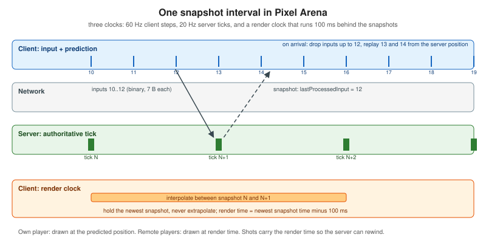

Building a Multiplayer Game
|
This content was generated with the assistance of AI and should be verified against the official documentation before being relied on in production. |
This page builds Pixel Arena, the multiplayer game of this section, from an empty directory to a running match. It is the end-to-end companion of three concept pages: Multiplayer Game Architecture explains why the server must be authoritative and how tick rate, snapshots and interest management fit together, Latency Compensation explains prediction, reconciliation, interpolation and rewind in isolation, and Game Servers and Colyseus surveys the server frameworks. Here every one of those ideas is code you can run, and the binary protocol that the other pages refer to is defined once, in the section The Pixel Arena wire protocol.
Baseline, checked on 2026-10-24: uWebSockets.js v20.71.0 (installed from its GitHub tag, not from npm), Node.js 24
(24.21.0 on the development machine, 24.22.1 in the node:24-trixie-slim image), TypeScript 7.0.2 used only as a type
checker, esbuild 0.28.2 for the browser bundle, node-datachannel 0.33.4 for the data-channel variant, Colyseus 0.18.10
(@colyseus/core 0.18.23, @colyseus/schema 5.0.42, @colyseus/sdk 0.18.6, @colyseus/ws-transport 0.18.4),
puppeteer-core 25.16.0 driving Google Chrome 155, Docker 29.8.1 with Compose 5.5.1, and the Linux 7.0 kernel of the Docker
Desktop virtual machine for tc netem. Every listing on this page is the exact file that was run: the server was started
natively and through Docker Compose, two headless Chrome pages played a match through the lobby, the data channel was
opened from Chrome to the Node.js server, the Colyseus server was started and driven by two SDK clients, and the network
tests ran in Linux containers with NET_ADMIN. The measured numbers quoted below come from those runs; they describe a
laptop and a virtual network, not a production deployment.
What you build
Pixel Arena is a top-down arena of 1280 by 720 pixels. Up to eight players move with WASD or the arrow keys at 240 pixels per second, aim with the mouse and fire a hitscan shot (an instantaneous ray) that does 25 damage; four hits kill, a dead player respawns after two seconds, and the first player to five frags wins. A lobby lists rooms, creates and joins them, and starts the match when everybody is ready.
The constants below are shared by this page, the concept pages and the data-channel page, so they are the contract:
| Constant | Value | Meaning |
|---|---|---|
Arena |
1280 x 720 px |
Players are circles of radius 16 px, clamped inside the arena. |
Player speed |
240 px/s |
One input command moves a player 4 px (240 divided by 60). |
Client step and input rate |
60 Hz |
The client samples input and renders at 60 Hz; each step creates one command with an increasing |
Server tick |
20 Hz (50 ms) |
The server applies queued commands, simulates, records history and sends a snapshot every 50 ms. |
Snapshot rate |
20 Hz |
One binary snapshot per tick; it carries |
Interpolation delay |
100 ms |
Remote players are drawn 100 ms behind the newest snapshot, which is two snapshot intervals. |
Lag-compensation history |
1 s |
The server keeps one second of positions, one entry per tick. |
Maximum rewind |
200 ms |
A shot is never evaluated further in the past than this, whatever the client claims. |
Fire |
hitscan |
Ray of 1500 px (longer than the arena diagonal), cooldown 250 ms measured in processed commands. |
The design choice that makes everything else simple is that one input command is exactly one 1/60 s step. The client does not send "I held right for 23 ms"; it sends command 4711, "right is down", and both sides advance the player by 4 pixels when they apply it. Prediction and the server then run the same pure function on the same commands and agree bit for bit, so a reconciliation correction means something real happened (a wall, a respawn, a lost command) and not that two floating-point clocks drifted.

Project layout
pixel-arena/
package.json tsconfig.json Dockerfile compose.yaml .dockerignore
public/index.html lobby and canvas page (main.js is built from src/client)
scripts/entrypoint.sh applies a netem rule when NETEM is set
scripts/netem-matrix.sh runs the network-condition matrix in containers
src/shared/protocol.ts constants and the binary encoders and decoders (the contract)
src/shared/sim.ts movement and ray maths shared by server and client
src/server/room.ts Room: queues, tick loop, hitscan, lag compensation, history
src/server/rtc.ts optional data-channel transport (node-datachannel)
src/server/server.ts uWebSockets.js: HTTP, WebSocket, lobby, origin check
src/client/net.ts Connection: lobby socket, data plane, clock, delay simulator
src/client/world.ts ClientWorld: prediction, reconciliation, interpolation
src/client/main.ts lobby UI, fixed step loop, canvas rendering
src/tools/* size comparison, headless bots, browser drivers
colyseus/ the Colyseus variant (separate package)Node.js 24 runs .ts files directly by erasing the type annotations (type stripping, enabled by default and stable since
v24.12.0), so the server needs no build step. Type stripping does not transform code, which is why the sources avoid
enums, namespaces with runtime code and constructor parameter properties, and why imports name the .ts extension and mark
types with import type. tsc --noEmit with erasableSyntaxOnly and verbatimModuleSyntax enforces exactly that. Only
the browser code is bundled, with esbuild.
{
"name": "pixel-arena",
"version": "1.0.0",
"private": true,
"type": "module",
"engines": { "node": ">=24" },
"scripts": {
"build:client": "esbuild src/client/main.ts --bundle --format=esm --target=es2022 --outfile=public/main.js",
"start": "node src/server/server.ts",
"check": "tsc --noEmit",
"bench:sizes": "node src/tools/sizes.ts"
},
"dependencies": {
"node-datachannel": "0.33.4",
"uWebSockets.js": "github:uNetworking/uWebSockets.js#v20.71.0"
},
"devDependencies": {
"@types/node": "24.19.2",
"esbuild": "0.28.2",
"puppeteer-core": "25.16.0",
"typescript": "7.0.2"
}
}{
"compilerOptions": {
"target": "ES2023",
"module": "NodeNext",
"moduleResolution": "NodeNext",
"lib": ["ES2023", "DOM"],
"types": ["node"],
"strict": true,
"noEmit": true,
"allowImportingTsExtensions": true,
"erasableSyntaxOnly": true,
"verbatimModuleSyntax": true,
"skipLibCheck": true
},
"include": ["src"]
}Install with npm install; because uWebSockets.js is fetched from a GitHub tag, Git must be present, and on Linux the
prebuilt binary needs glibc 2.38 or newer (see uWebSockets.js for the
details and the failure messages).
The Pixel Arena wire protocol
The game uses two kinds of messages on one connection. Control messages (lobby, room roster, match start and end, frags,
signalling for the data channel) are rare and human-readable, so they are JSON text frames in the style of the Chatterbox
envelope of Message Design and Serialization, without its
versioning machinery. The data plane (inputs, snapshots, pings) is high-rate and tiny, so it is binary. The WebSocket
opcode already separates the two: a text frame is JSON, a binary frame starts with a one-byte type. Over the data channel
only the binary data plane is used. The subprotocol token is pixel-arena.v1.
All multi-byte integers are little endian (the byte order of every machine a browser runs on, so DataView reads
and typed arrays agree). Positions travel as u16 in units of 1/16 px, which covers 4095 px with a resolution of 0.0625 px;
the arena needs 1280. Angles travel as u16 turns: 0 to 65535 means 0 to 2 pi radians.
| Offset | Size | Type | Field |
|---|---|---|---|
0 |
1 |
u8 |
type, |
1 |
1 |
u8 |
|
2 |
4 |
u32 |
|
6 + 7i |
4 |
u32 |
|
10 + 7i |
1 |
u8 |
|
11 + 7i |
2 |
u16 |
|
| Offset | Size | Type | Field |
|---|---|---|---|
0 |
1 |
u8 |
type, |
1 |
4 |
u32 |
|
| Offset | Size | Type | Field |
|---|---|---|---|
0 |
1 |
u8 |
type, |
1 |
4 |
u32 |
|
5 |
4 |
u32 |
|
9 |
1 |
u8 |
|
10 |
1 |
u8 |
|
11 + 12i |
1 |
u8 |
player id (the slot in the room, from 1) |
12 + 12i |
2 |
u16 |
x in 1/16 px |
14 + 12i |
2 |
u16 |
y in 1/16 px |
16 + 12i |
1 |
u8 |
hp, 0 to 100 |
17 + 12i |
1 |
u8 |
flags, bit 0 set when the player is alive |
18 + 12i |
1 |
u8 |
aim, the high byte of the aim angle (1.4 degrees of resolution, for drawing only) |
19 + 12i |
4 |
u32 |
|
11 + 12p + 6j |
1 |
u8 |
shot j: shooter id |
12 + 12p + 6j |
1 |
u8 |
shot j: target id, 0 when it hit nothing |
13 + 12p + 6j |
2 |
u16 |
shot j: end point x in 1/16 px |
15 + 12p + 6j |
2 |
u16 |
shot j: end point y in 1/16 px |
| Offset | Size | Type | Field |
|---|---|---|---|
0 |
1 |
u8 |
type, |
1 |
4 |
u32 |
|
5 |
4 |
u32 |
|
The same snapshot is sent to every player of a room, so the server encodes it once per tick and each client reads its own
acknowledgement from its own entry. That is why lastProcessedInput is a u32 for everybody: it costs 4 bytes per player
and keeps the encode-once property. A design that tailors the packet to each client could send it only for the receiver,
at the price of one encode per client.
The JSON control messages are small enough to list in full.
| Direction | t |
Fields |
|---|---|---|
client to server |
|
|
client to server |
|
none; the server also pushes |
client to server |
|
|
client to server |
|
|
client to server |
|
none |
client to server |
|
|
client to server |
|
|
server to client |
|
|
server to client |
|
|
server to client |
|
|
server to client |
|
|
server to client |
|
|
server to client |
|
|
server to client |
|
|
server to client |
|
|
Binary or JSON: measured
The same snapshot as a JSON object (type, tick, time, a players array of objects with id, x, y, hp, alive,
aim and lastProcessedInput, positions rounded to two decimals so JSON is not penalised for 17-digit floats) was
compared with the binary snapshot over 400 snapshots of random positions for 2, 4, 8 and 16 players. deflate is raw
DEFLATE of the JSON text, which is what permessage-deflate (RFC 7692) would send per message without context takeover.
// Compares the binary snapshot with an equivalent JSON snapshot for several player counts.
import { deflateRawSync } from "node:zlib";
import { ARENA_H, ARENA_W, TICK_HZ, decodeSnapshot, encodeSnapshot } from "../shared/protocol.ts";
import type { Snapshot } from "../shared/protocol.ts";
function sample(n: number, tick: number): Snapshot {
const players = Array.from({ length: n }, (_, i) => ({
id: i + 1, x: 16 + Math.random() * (ARENA_W - 32), y: 16 + Math.random() * (ARENA_H - 32), hp: 25 * (1 + (i % 4)),
alive: true, aim: Math.floor(Math.random() * 256) << 8, lastProcessedInput: 100000 + tick * 3 + i,
}));
return { tick, time: 3600000 + tick * 50, players, shots: tick % 7 === 0 ? [{ shooter: 1, target: 2, x: 400.25, y: 300.5 }] : [] };
}
console.log("players | binary B | JSON B | JSON deflate B | binary kbit/s per client | JSON kbit/s per client | ratio");
for (const n of [2, 4, 8, 16]) {
let bin = 0, json = 0, defl = 0; const N = 400;
for (let t = 1; t <= N; t++) {
const s = sample(n, t);
const b = encodeSnapshot(s);
const d = decodeSnapshot(b)!; // the round trip must be lossless to 1/16 px
if (Math.abs(d.players[0].x - s.players[0].x) > 1 / 32 || d.tick !== s.tick) throw new Error("round trip failed");
const round = (v: number) => Math.round(v * 100) / 100; // fair to JSON: two decimals, not 17 digits
const j = JSON.stringify({ type: "snapshot", tick: s.tick, time: s.time, players: s.players.map((p) => ({ ...p, x: round(p.x), y: round(p.y) })), shots: s.shots });
bin += b.byteLength; json += Buffer.byteLength(j); defl += deflateRawSync(j).byteLength;
}
const kbps = (bytes: number) => ((bytes / N) * TICK_HZ * 8) / 1000;
console.log(`${String(n).padStart(7)} | ${(bin / N).toFixed(0).padStart(8)} | ${(json / N).toFixed(0).padStart(6)} | ${(defl / N).toFixed(0).padStart(14)} | ${kbps(bin).toFixed(1).padStart(24)} | ${kbps(json).toFixed(1).padStart(22)} | ${(json / bin).toFixed(1)}x`);
}players | binary B | JSON B | JSON deflate B | binary kbit/s per client | JSON kbit/s per client | ratio
2 | 36 | 257 | 165 | 5.7 | 41.2 | 7.2x
4 | 60 | 441 | 213 | 9.6 | 70.6 | 7.4x
8 | 108 | 809 | 289 | 17.3 | 129.4 | 7.5x
16 | 204 | 1551 | 440 | 32.6 | 248.1 | 7.6xSource: MDN: DataView
The binary snapshot is about 7.5 times smaller than the JSON one and 2 to 5 times smaller than the compressed JSON,
which also needs CPU on both ends and, with context takeover, memory per connection. At eight players and 20 snapshots per
second that is 17 kbit/s against 129 kbit/s per client, and the server sends it to every player, so the saving multiplies
with the player count. Binary also removes the parsing cost on the client, where a 60 Hz render loop shares a thread with
the decoder. The price is a layout that must be versioned by hand: every field above is part of the contract, so a change
means a new subprotocol token (pixel-arena.v2). For snapshots that are mostly unchanged, delta compression (sending only
what changed since the last snapshot the client acknowledged) shrinks them further; the Colyseus variant below does exactly
that, and the concept page discusses when it is worth the complexity.
The shared code
The two files below are imported by the server, the browser client, the bots and the Colyseus variant. If prediction and the server ever disagree, this is the first place to look, because it is the only place where movement is defined.
// Pixel Arena binary protocol v1. All multi-byte integers are little endian.
// Control messages (lobby) are JSON text frames; the data plane is binary frames.
export const ARENA_W = 1280;
export const ARENA_H = 720;
export const SPEED = 240; // px per second
export const INPUT_HZ = 60; // one input command = 1/60 s of movement
export const STEP_PX = SPEED / INPUT_HZ; // 4 px per input
export const TICK_HZ = 20;
export const TICK_MS = 1000 / TICK_HZ; // 50 ms
export const INTERP_DELAY_MS = 100; // two snapshots
export const HISTORY_MS = 1000; // lag-compensation history
export const MAX_REWIND_MS = 200;
export const PLAYER_RADIUS = 16;
export const RAY_LENGTH = 1500; // longer than the arena diagonal (1469 px)
export const SHOT_DAMAGE = 25;
export const SHOT_COOLDOWN_INPUTS = 15; // 250 ms
export const MAX_HP = 100;
export const FRAGS_TO_WIN = 5;
export const RESPAWN_MS = 2000;
export const MAX_BATCH = 8;
// client -> server
export const C_INPUT = 0x01; // u8 type, u8 count, u32 viewTime, count x {u32 seq, u8 buttons, u16 aim}
export const C_PING = 0x02; // u8 type, u32 clientTime
// server -> client
export const S_SNAPSHOT = 0x10; // u8 type, u32 tick, u32 serverTime, u8 players, u8 shots, players x 12 B, shots x 6 B
export const S_PONG = 0x11; // u8 type, u32 clientTime, u32 serverTime
export const BTN_LEFT = 1, BTN_RIGHT = 2, BTN_UP = 4, BTN_DOWN = 8, BTN_FIRE = 16;
export const INPUT_BYTES = 7, INPUT_HEADER = 6;
export const PLAYER_BYTES = 12, SHOT_BYTES = 6, SNAPSHOT_HEADER = 11;
export interface Input { seq: number; buttons: number; aim: number } // aim: 0..65535 = 0..2*PI
export interface PlayerState {
id: number; x: number; y: number; hp: number; alive: boolean; aim: number; lastProcessedInput: number;
}
export interface Shot { shooter: number; target: number; x: number; y: number }
export interface Snapshot { tick: number; time: number; players: PlayerState[]; shots: Shot[] }
const POS = 16; // positions travel as u16 in 1/16 px
export function encodeInputs(inputs: Input[], viewTime: number): Uint8Array {
const buf = new Uint8Array(INPUT_HEADER + inputs.length * INPUT_BYTES);
const v = new DataView(buf.buffer);
v.setUint8(0, C_INPUT); v.setUint8(1, inputs.length); v.setUint32(2, viewTime >>> 0, true);
inputs.forEach((inp, i) => {
const o = INPUT_HEADER + i * INPUT_BYTES;
v.setUint32(o, inp.seq >>> 0, true); v.setUint8(o + 4, inp.buttons); v.setUint16(o + 5, inp.aim, true);
});
return buf;
}
export function decodeInputs(b: Uint8Array): { viewTime: number; inputs: Input[] } | null {
if (b.byteLength < INPUT_HEADER || b[0] !== C_INPUT) return null;
const v = new DataView(b.buffer, b.byteOffset, b.byteLength);
const count = v.getUint8(1);
if (count < 1 || count > MAX_BATCH || b.byteLength !== INPUT_HEADER + count * INPUT_BYTES) return null;
const inputs: Input[] = [];
for (let i = 0; i < count; i++) {
const o = INPUT_HEADER + i * INPUT_BYTES;
inputs.push({ seq: v.getUint32(o, true), buttons: v.getUint8(o + 4), aim: v.getUint16(o + 5, true) });
}
return { viewTime: v.getUint32(2, true), inputs };
}
export function encodePing(clientTime: number): Uint8Array {
const b = new Uint8Array(5); const v = new DataView(b.buffer);
v.setUint8(0, C_PING); v.setUint32(1, clientTime >>> 0, true); return b;
}
export function encodePong(clientTime: number, serverTime: number): Uint8Array {
const b = new Uint8Array(9); const v = new DataView(b.buffer);
v.setUint8(0, S_PONG); v.setUint32(1, clientTime >>> 0, true); v.setUint32(5, serverTime >>> 0, true); return b;
}
export function encodeSnapshot(s: Snapshot): Uint8Array {
const buf = new Uint8Array(SNAPSHOT_HEADER + s.players.length * PLAYER_BYTES + s.shots.length * SHOT_BYTES);
const v = new DataView(buf.buffer);
v.setUint8(0, S_SNAPSHOT); v.setUint32(1, s.tick >>> 0, true); v.setUint32(5, s.time >>> 0, true);
v.setUint8(9, s.players.length); v.setUint8(10, s.shots.length);
let o = SNAPSHOT_HEADER;
for (const p of s.players) {
v.setUint8(o, p.id);
v.setUint16(o + 1, Math.round(p.x * POS), true);
v.setUint16(o + 3, Math.round(p.y * POS), true);
v.setUint8(o + 5, p.hp);
v.setUint8(o + 6, p.alive ? 1 : 0);
v.setUint8(o + 7, p.aim >> 8);
v.setUint32(o + 8, p.lastProcessedInput >>> 0, true);
o += PLAYER_BYTES;
}
for (const sh of s.shots) {
v.setUint8(o, sh.shooter); v.setUint8(o + 1, sh.target);
v.setUint16(o + 2, Math.round(sh.x * POS), true); v.setUint16(o + 4, Math.round(sh.y * POS), true);
o += SHOT_BYTES;
}
return buf;
}
export function decodeSnapshot(b: Uint8Array): Snapshot | null {
if (b.byteLength < SNAPSHOT_HEADER || b[0] !== S_SNAPSHOT) return null;
const v = new DataView(b.buffer, b.byteOffset, b.byteLength);
const np = v.getUint8(9), ns = v.getUint8(10);
if (b.byteLength !== SNAPSHOT_HEADER + np * PLAYER_BYTES + ns * SHOT_BYTES) return null;
const players: PlayerState[] = []; const shots: Shot[] = [];
let o = SNAPSHOT_HEADER;
for (let i = 0; i < np; i++, o += PLAYER_BYTES) {
players.push({
id: v.getUint8(o), x: v.getUint16(o + 1, true) / POS, y: v.getUint16(o + 3, true) / POS,
hp: v.getUint8(o + 5), alive: v.getUint8(o + 6) === 1, aim: v.getUint8(o + 7) << 8,
lastProcessedInput: v.getUint32(o + 8, true),
});
}
for (let i = 0; i < ns; i++, o += SHOT_BYTES) {
shots.push({ shooter: v.getUint8(o), target: v.getUint8(o + 1), x: v.getUint16(o + 2, true) / POS, y: v.getUint16(o + 4, true) / POS });
}
return { tick: v.getUint32(1, true), time: v.getUint32(5, true), players, shots };
}
// JSON control messages (text frames)
export type ClientMsg =
| { t: "hello"; name: string }
| { t: "list" }
| { t: "create"; name: string; max: number; lagComp: boolean }
| { t: "join"; room: string }
| { t: "leave" }
| { t: "ready"; ready: boolean }
| { t: "rtc-offer"; sdp: string }
| { t: "rtc-candidate"; candidate: string; mid: string };Source: MDN: DataView
// Deterministic movement shared by the server and the client prediction.
import { ARENA_H, ARENA_W, BTN_DOWN, BTN_LEFT, BTN_RIGHT, BTN_UP, PLAYER_RADIUS, STEP_PX } from "./protocol.ts";
import type { Input } from "./protocol.ts";
export interface Pos { x: number; y: number }
// One input command is exactly 1/60 s of movement, so replaying the same commands gives the same result.
export function applyInput(p: Pos, input: Input): void {
let dx = 0, dy = 0;
if (input.buttons & BTN_LEFT) dx -= 1;
if (input.buttons & BTN_RIGHT) dx += 1;
if (input.buttons & BTN_UP) dy -= 1;
if (input.buttons & BTN_DOWN) dy += 1;
if (dx !== 0 && dy !== 0) { dx *= Math.SQRT1_2; dy *= Math.SQRT1_2; }
p.x = Math.min(ARENA_W - PLAYER_RADIUS, Math.max(PLAYER_RADIUS, p.x + dx * STEP_PX));
p.y = Math.min(ARENA_H - PLAYER_RADIUS, Math.max(PLAYER_RADIUS, p.y + dy * STEP_PX));
}
// Ray (origin, angle) against a circle; returns the distance along the ray or -1.
export function rayCircle(ox: number, oy: number, angle: number, cx: number, cy: number, r: number, maxLen: number): number {
const dx = Math.cos(angle), dy = Math.sin(angle);
const fx = cx - ox, fy = cy - oy;
const t = fx * dx + fy * dy; // projection on the ray
if (t < 0 || t > maxLen) return -1;
const px = fx - t * dx, py = fy - t * dy; // perpendicular offset
const d2 = px * px + py * py;
if (d2 > r * r) return -1;
return Math.max(0, t - Math.sqrt(r * r - d2));
}
export const aimToRad = (aim: number): number => (aim / 65536) * Math.PI * 2;
export const radToAim = (rad: number): number => Math.round((((rad % (Math.PI * 2)) + Math.PI * 2) % (Math.PI * 2)) / (Math.PI * 2) * 65536) & 0xffff;applyInput is the whole movement model: it reads the button mask, normalises diagonal movement and clamps to the arena.
rayCircle solves the ray-circle intersection with a projection and a perpendicular distance and returns the distance to the
entry point, which is how a hitscan weapon finds the nearest player in front of it.
The server
Room: the tick loop, input queues and lag compensation
A Room owns the players, a per-player input queue, a one-second history of positions and the tick timer. Four details
carry most of the design:
-
A self-correcting timer.
setInterval(fn, 50)drifts, because each callback is scheduled after the previous one ran. The loop schedules the nextsetTimeoutagainst an absolutenextAtthat advances by exactly 50 ms, so a late tick is followed by a shorter wait and the average stays at 20 Hz. If the process falls more than five ticks behind, it resets rather than running a burst of catch-up ticks.performance.now()is monotonic;Date.now()is not. -
Input queues with a budget. Commands are queued as they arrive and consumed at tick time, in sequence order. A client produces three commands per tick on average; the server grants four per tick with a cap of 12 saved up. That absorbs network jitter (a burst of six commands after a stall is fine) but a client that sends 120 commands per second advances only about 4/3 as fast as an honest one, so speed hacking cannot buy more than a third. A queue is capped at 30 commands. Commands with a sequence number not greater than the last queued one are dropped, which makes duplicate and redundant packets harmless.
-
The authoritative hitscan. A fire command is evaluated when it is processed, using the shooter’s position at that point and nothing the client says about where it was. With lag compensation off the targets are tested where they are now; with it on they are tested where the shooter saw them: the batch’s
viewTime, clamped to betweennow - 200 msandnow, is looked up in the history and the two surrounding entries are interpolated. A client can therefore lie aboutviewTimeby at most 200 ms. -
History per tick. After every tick the room stores the position and alive flag of every player and drops entries older than one second. Twenty small maps are cheap; at higher tick rates a ring buffer of typed arrays is the usual step.
// An authoritative match: fixed 20 Hz tick, input queues, hitscan with optional lag compensation.
import {
ARENA_H, ARENA_W, FRAGS_TO_WIN, HISTORY_MS, MAX_HP, MAX_REWIND_MS, PLAYER_RADIUS, RAY_LENGTH, RESPAWN_MS,
SHOT_COOLDOWN_INPUTS, SHOT_DAMAGE, TICK_MS, BTN_FIRE, encodeSnapshot,
} from "../shared/protocol.ts";
import type { Input, PlayerState, Shot } from "../shared/protocol.ts";
import { applyInput, aimToRad, rayCircle } from "../shared/sim.ts";
const FRAGS = Number(process.env.FRAGS_TO_WIN ?? FRAGS_TO_WIN); // tests override these three
const DAMAGE = Number(process.env.SHOT_DAMAGE ?? SHOT_DAMAGE);
const MAX_REWIND = Number(process.env.MAX_REWIND_MS ?? MAX_REWIND_MS);
export const serverTime = (): number => Math.floor(performance.now()) >>> 0;
type QueuedInput = Input & { view: number };
export interface Peer { // what the room needs from a connection
sendJson(msg: object): void;
sendBinary(buf: Uint8Array): boolean; // false when the snapshot was dropped (slow consumer)
}
export class Player {
id = 0; name: string; peer: Peer; ready = false; frags = 0;
x = 0; y = 0; hp = MAX_HP; alive = true; aim = 0; respawnAt = 0;
lastProcessedInput = 0; lastQueuedSeq = 0; queue: QueuedInput[] = [];
budget = 12; cooldown = 0; dropped = 0;
constructor(name: string, peer: Peer) { this.name = name; this.peer = peer; }
}
interface HistoryEntry { time: number; pos: Map<number, { x: number; y: number; alive: boolean }> }
export class Room {
readonly players = new Map<number, Player>();
state: "lobby" | "playing" | "ended" = "lobby";
tick = 0; shotsThisTick: Shot[] = [];
history: HistoryEntry[] = [];
private timer: NodeJS.Timeout | undefined;
private nextAt = 0;
tickTimes: number[] = [];
readonly id: string; name: string; readonly max: number; readonly lagComp: boolean;
readonly minPlayers: number; readonly onChange: () => void;
constructor(id: string, name: string, max: number, lagComp: boolean, minPlayers: number, onChange: () => void) {
this.id = id; this.name = name; this.max = max; this.lagComp = lagComp; this.minPlayers = minPlayers; this.onChange = onChange;
}
join(p: Player): boolean {
if (this.players.size >= this.max || this.state !== "lobby") return false;
for (let id = 1; id <= 255; id++) if (!this.players.has(id)) { p.id = id; break; }
this.players.set(p.id, p);
this.broadcastRoster();
this.onChange();
return true;
}
leave(p: Player): void {
this.players.delete(p.id);
if (this.players.size === 0) this.stop();
else this.broadcastRoster();
this.onChange();
this.maybeStart();
}
setReady(p: Player, ready: boolean): void { p.ready = ready; this.broadcastRoster(); this.maybeStart(); }
roster() {
return { t: "roster", state: this.state, players: [...this.players.values()].map((p) => ({ id: p.id, name: p.name, ready: p.ready, frags: p.frags })) };
}
broadcastRoster(): void { this.broadcastJson(this.roster()); }
broadcastJson(msg: object): void { for (const p of this.players.values()) p.peer.sendJson(msg); }
private maybeStart(): void {
if (this.state !== "lobby" || this.players.size < this.minPlayers) return;
if (![...this.players.values()].every((p) => p.ready)) return;
const startsAt = serverTime() + 3000;
this.broadcastJson({ t: "countdown", startsAt });
setTimeout(() => { if (this.state === "lobby" && this.players.size >= this.minPlayers) this.start(); }, 3000);
}
private spawn(p: Player): void {
p.x = PLAYER_RADIUS + Math.random() * (ARENA_W - 2 * PLAYER_RADIUS);
p.y = PLAYER_RADIUS + Math.random() * (ARENA_H - 2 * PLAYER_RADIUS);
p.hp = MAX_HP; p.alive = true;
}
start(): void {
this.state = "playing"; this.history = []; this.tick = 0;
for (const p of this.players.values()) { this.spawn(p); p.frags = 0; p.queue = []; p.lastProcessedInput = 0; p.lastQueuedSeq = 0; p.cooldown = 0; }
this.broadcastJson({ t: "start", lagComp: this.lagComp });
this.broadcastRoster();
this.onChange();
this.nextAt = performance.now() + TICK_MS;
this.schedule();
}
stop(): void { clearTimeout(this.timer); this.timer = undefined; }
private schedule(): void {
// Self-correcting timer: aim at absolute tick times so setTimeout jitter does not accumulate.
this.timer = setTimeout(() => {
const began = performance.now();
this.step(serverTime());
this.tickTimes.push(performance.now() - began);
if (this.tickTimes.length > 200) this.tickTimes.shift();
this.nextAt += TICK_MS;
if (this.nextAt < performance.now() - 5 * TICK_MS) this.nextAt = performance.now() + TICK_MS; // fell far behind
this.schedule();
}, Math.max(0, this.nextAt - performance.now()));
}
queueInputs(p: Player, view: number, inputs: Input[]): void {
for (const inp of inputs) {
if (inp.seq <= p.lastQueuedSeq) continue; // duplicate or old (redundant batch)
p.lastQueuedSeq = inp.seq;
if (p.queue.length < 30) p.queue.push({ ...inp, view });
}
}
step(now: number): void {
this.tick++;
this.shotsThisTick = [];
for (const p of this.players.values()) {
p.budget = Math.min(p.budget + 4, 12); // at most ~4 commands per tick (3 are nominal)
let n = 0;
while (p.queue.length > 0 && n < p.budget) {
const inp = p.queue.shift()!;
n++;
this.processInput(p, inp, now);
}
p.budget -= n;
if (!p.alive && now >= p.respawnAt) this.spawn(p);
}
this.history.push({ time: now, pos: new Map([...this.players.values()].map((p) => [p.id, { x: p.x, y: p.y, alive: p.alive }])) });
while (this.history.length > 0 && this.history[0].time < now - HISTORY_MS) this.history.shift();
const states: PlayerState[] = [...this.players.values()].map((p) => ({
id: p.id, x: p.x, y: p.y, hp: p.hp, alive: p.alive, aim: p.aim, lastProcessedInput: p.lastProcessedInput,
}));
const buf = encodeSnapshot({ tick: this.tick, time: now, players: states, shots: this.shotsThisTick });
for (const p of this.players.values()) if (!p.peer.sendBinary(buf)) p.dropped++;
}
private processInput(p: Player, inp: QueuedInput, now: number): void {
p.lastProcessedInput = inp.seq;
p.aim = inp.aim;
if (p.cooldown > 0) p.cooldown--;
if (!p.alive || this.state !== "playing") return;
applyInput(p, inp);
if (inp.buttons & BTN_FIRE && p.cooldown === 0) { p.cooldown = SHOT_COOLDOWN_INPUTS; this.fire(p, inp, now); }
}
// Position of a player as it was at time t (clamped to the history we keep).
private positionAt(id: number, t: number, now: number): { x: number; y: number; alive: boolean } | null {
const live = this.players.get(id);
if (!live) return null;
const entries = [...this.history, { time: now, pos: new Map([[id, { x: live.x, y: live.y, alive: live.alive }]]) }];
for (let i = entries.length - 1; i > 0; i--) {
const a = entries[i - 1], b = entries[i];
if (t >= a.time && t <= b.time) {
const pa = a.pos.get(id), pb = b.pos.get(id);
if (!pa || !pb) return pb ?? null;
const k = b.time === a.time ? 1 : (t - a.time) / (b.time - a.time);
return { x: pa.x + (pb.x - pa.x) * k, y: pa.y + (pb.y - pa.y) * k, alive: k < 0.5 ? pa.alive : pb.alive };
}
}
return { x: live.x, y: live.y, alive: live.alive };
}
private fire(shooter: Player, inp: QueuedInput, now: number): void {
// Lag compensation: evaluate the targets where the shooter saw them (viewTime), but never further back than MAX_REWIND_MS.
const t = this.lagComp ? Math.min(now, Math.max(now - MAX_REWIND, inp.view)) : now;
const angle = aimToRad(inp.aim);
let best: { dist: number; target: Player } | null = null;
for (const target of this.players.values()) {
if (target === shooter) continue;
const pos = this.lagComp ? this.positionAt(target.id, t, now) : { x: target.x, y: target.y, alive: target.alive };
if (!pos || !pos.alive) continue;
const d = rayCircle(shooter.x, shooter.y, angle, pos.x, pos.y, PLAYER_RADIUS, RAY_LENGTH);
if (d >= 0 && (!best || d < best.dist)) best = { dist: d, target };
}
const len = best ? best.dist : RAY_LENGTH;
this.shotsThisTick.push({ shooter: shooter.id, target: best ? best.target.id : 0, x: shooter.x + Math.cos(angle) * len, y: shooter.y + Math.sin(angle) * len });
if (!best || !best.target.alive) return;
const target = best.target;
target.hp = Math.max(0, target.hp - DAMAGE);
if (target.hp === 0) {
target.alive = false; target.respawnAt = now + RESPAWN_MS; shooter.frags++;
this.broadcastJson({ t: "frag", killer: shooter.id, victim: target.id, frags: shooter.frags });
if (shooter.frags >= FRAGS) this.end(shooter);
}
}
private end(winner: Player): void {
this.state = "ended";
this.broadcastJson({ t: "end", winner: winner.id, scores: [...this.players.values()].map((p) => ({ id: p.id, name: p.name, frags: p.frags })) });
setTimeout(() => {
this.stop(); this.state = "lobby";
for (const p of this.players.values()) p.ready = false;
this.broadcastRoster(); this.onChange();
}, 3000);
}
summary() {
return { id: this.id, name: this.name, players: this.players.size, max: this.max, state: this.state, lagComp: this.lagComp };
}
}The room never touches a socket. It talks to its players through the two-method Peer interface, and sendBinary
returning false is how a transport reports that it dropped the snapshot because the client is too slow. A snapshot is
stale 50 ms later, so queueing it (the default of a reliable stream) is the wrong behaviour for a game: the client would
receive an old world after a new one. The server counts these drops per player.
The data-channel transport
The browser opens the data channel and the server answers, exactly as in the peer-to-server section of
Data Channels. Signalling uses the lobby WebSocket that already exists,
so no extra server is needed. The module accepts only a channel labelled arena, forwards binary messages to the same input
handler the WebSocket uses and drops a snapshot when more than 8 KiB is already waiting in the channel.
// Optional unreliable data-channel transport: the browser offers, the server answers, signalling rides the lobby WebSocket.
import { RTCPeerConnection } from "node-datachannel/polyfill";
export interface RtcLink {
channelOpen: () => boolean;
send: (buf: Uint8Array) => boolean;
addCandidate: (candidate: string, mid: string) => Promise<void>;
close: () => void;
}
export async function answerOffer(
sdp: string,
signal: (msg: object) => void,
onBinary: (data: Uint8Array) => void,
onClose: () => void,
): Promise<RtcLink> {
const iceServers = (process.env.STUN_URLS ?? "").split(",").filter(Boolean).map((urls) => ({ urls }));
const pc = new RTCPeerConnection({ iceServers });
let channel: any = null;
pc.onicecandidate = (e: any) => {
if (e.candidate) signal({ t: "rtc-candidate", candidate: e.candidate.candidate, mid: e.candidate.sdpMid ?? "0" });
};
pc.ondatachannel = (e: any) => {
if (e.channel.label !== "arena") { e.channel.close(); return; } // accept only the label we expect
channel = e.channel;
channel.binaryType = "arraybuffer";
channel.onmessage = (m: { data: ArrayBuffer | string }) => { if (typeof m.data !== "string") onBinary(new Uint8Array(m.data)); };
channel.onclose = onClose;
};
pc.onconnectionstatechange = () => { if (["failed", "closed", "disconnected"].includes(pc.connectionState)) onClose(); };
await pc.setRemoteDescription({ type: "offer", sdp });
await (pc as any).setLocalDescription();
signal({ t: "rtc-answer", sdp: pc.localDescription!.sdp });
return {
channelOpen: () => channel !== null && channel.readyState === "open",
send: (buf) => {
if (!channel || channel.readyState !== "open") return false;
if (channel.bufferedAmount > 8 * 1024) return false; // unreliable data: drop instead of queueing
channel.send(buf);
return true;
},
addCandidate: async (candidate, mid) => { await pc.addIceCandidate({ candidate, sdpMid: mid }); },
close: () => { try { pc.close(); } catch { /* already closed */ } },
};
}The HTTP and WebSocket server
server.ts is the only file that knows uWebSockets.js. It serves the page and the bundle, a /healthz probe for Docker and
a /stats endpoint with the measured duration of the tick, and upgrades /ws. Notes on the choices:
-
Origin allow-list. Browsers send cookies and an
Originheader on a WebSocket handshake and do not apply the same-origin policy, so the upgrade handler rejects a present-but-unknownOriginwith HTTP 403 before upgrading. Bots and other non-browser clients send noOriginand are accepted; in a real deployment authentication takes their place (see Authentication and Authorization). -
maxPayloadLength: 8192. The largest legitimate message is an SDP offer; an input batch is at most 62 bytes. uWebSockets.js closes the socket on a larger message, which turns a memory-exhaustion attempt into a disconnect. -
idleTimeout: 30. The library pings every client automatically and closes a silent one; the browser answers pings by itself, so no application heartbeat is needed for liveness. The one-secondPINGmessage exists to measure RTT. -
maxBackpressurewithcloseOnBackpressureLimit. A client more than 64 KiB behind is disconnected instead of buffered. Below that limit the room’s own check (8 KiB) skips snapshots first. -
The ESM wrapper. The v20.71.0 tag ships an ES module wrapper that points at a missing file, so the module is loaded with
createRequire, as on the uWebSockets.js page. -
Lobby publish and subscribe. Every connection subscribes to the
lobbytopic and the server publishes the room list on it whenever a room is created, joined, left or changes state. Gameplay does not use topics, because each room is small and per-player sending allows the per-connection drop check above.
// Pixel Arena server: uWebSockets.js for HTTP + WebSocket, one authoritative Room per match.
import { createRequire } from "node:module";
import { readFileSync } from "node:fs";
import { randomBytes } from "node:crypto";
import { ARENA_H, ARENA_W, C_INPUT, C_PING, INPUT_HZ, INTERP_DELAY_MS, MAX_REWIND_MS, SPEED, TICK_HZ, decodeInputs, encodePong } from "../shared/protocol.ts";
import type { ClientMsg } from "../shared/protocol.ts";
import { Player, Room, serverTime } from "./room.ts";
import type { Peer } from "./room.ts";
import { answerOffer } from "./rtc.ts";
import type { RtcLink } from "./rtc.ts";
const uWS = createRequire(import.meta.url)("uWebSockets.js"); // the ESM wrapper of v20.71.0 is broken
const PORT = Number(process.env.PORT ?? 8080);
const MIN_PLAYERS = Number(process.env.MIN_PLAYERS ?? 2);
const PUBLIC_DIR = new URL("../../public/", import.meta.url);
const ALLOWED_ORIGINS = new Set((process.env.ALLOWED_ORIGINS ?? `http://localhost:${PORT},http://127.0.0.1:${PORT}`).split(","));
interface Conn {
id: string; name: string; ws: any; player: Player | null; room: Room | null; rtc: RtcLink | null; closed: boolean;
pendingCandidates: Array<{ candidate: string; mid: string }>;
}
const rooms = new Map<string, Room>();
const conns = new Set<Conn>();
const roomList = () => ({ t: "rooms", rooms: [...rooms.values()].map((r) => r.summary()) });
const publishRooms = () => app.publish("lobby", JSON.stringify(roomList()), false);
function peerFor(c: Conn): Peer {
return {
sendJson: (msg) => { if (!c.closed) c.ws.send(JSON.stringify(msg), false); },
sendBinary: (buf) => {
if (c.closed) return false;
if (c.rtc?.channelOpen()) return c.rtc.send(buf); // data channel when it is up
if (c.ws.getBufferedAmount() > 8 * 1024) return false; // slow consumer: skip this snapshot
return c.ws.send(buf, true) !== 0;
},
};
}
function leaveRoom(c: Conn): void {
if (c.room && c.player) {
const room = c.room;
room.leave(c.player);
if (room.players.size === 0) rooms.delete(room.id);
}
c.room = null; c.player = null;
c.rtc?.close(); c.rtc = null;
publishRooms();
}
async function onJson(c: Conn, msg: ClientMsg): Promise<void> {
const reply = (m: object) => c.ws.send(JSON.stringify(m), false);
switch (msg.t) {
case "hello": c.name = String(msg.name ?? "player").slice(0, 16) || "player"; break;
case "list": reply(roomList()); break;
case "create": {
if (c.room) return reply({ t: "error", code: "conflict", message: "already in a room" });
const id = randomBytes(3).toString("hex");
const room = new Room(id, String(msg.name ?? `room-${id}`).slice(0, 24), Math.min(16, Math.max(1, Number(msg.max) || 8)), msg.lagComp !== false, MIN_PLAYERS, publishRooms);
rooms.set(id, room);
return onJson(c, { t: "join", room: id });
}
case "join": {
const room = rooms.get(String(msg.room));
if (!room) return reply({ t: "error", code: "not_found", message: "no such room" });
if (c.room) return reply({ t: "error", code: "conflict", message: "already in a room" });
const player = new Player(c.name, peerFor(c));
if (!room.join(player)) return reply({ t: "error", code: "room_full", message: "room full or already playing" });
c.room = room; c.player = player;
reply({ t: "joined", room: room.id, you: player.id, lagComp: room.lagComp });
break;
}
case "leave": leaveRoom(c); reply({ t: "left" }); break;
case "ready": if (c.room && c.player) c.room.setReady(c.player, !!msg.ready); break;
case "rtc-offer": {
if (!c.player) return reply({ t: "error", code: "forbidden", message: "join a room first" });
c.rtc?.close();
c.rtc = await answerOffer(String(msg.sdp), (m) => { if (!c.closed) reply(m); },
(data) => handleBinary(c, data), () => { c.rtc = null; });
for (const k of c.pendingCandidates.splice(0)) await c.rtc.addCandidate(k.candidate, k.mid);
break;
}
case "rtc-candidate":
if (c.rtc) await c.rtc.addCandidate(String(msg.candidate), String(msg.mid));
else c.pendingCandidates.push({ candidate: String(msg.candidate), mid: String(msg.mid) });
break;
default: reply({ t: "error", code: "bad_request", message: "unknown type" });
}
}
// The binary data plane is the same whether it arrives over the WebSocket or the data channel.
function handleBinary(c: Conn, data: Uint8Array): void {
const reply = (buf: Uint8Array) => { if (c.rtc?.channelOpen()) c.rtc.send(buf); else if (!c.closed) c.ws.send(buf, true); };
if (data[0] === C_PING && data.byteLength === 5) {
const v = new DataView(data.buffer, data.byteOffset, data.byteLength);
reply(encodePong(v.getUint32(1, true), serverTime()));
} else if (data[0] === C_INPUT && c.room && c.player) {
const batch = decodeInputs(data);
if (batch) c.room.queueInputs(c.player, batch.viewTime, batch.inputs);
}
}
const files: Record<string, { body: Buffer; type: string }> = {};
for (const [path, name, type] of [["/", "index.html", "text/html; charset=utf-8"], ["/main.js", "main.js", "text/javascript; charset=utf-8"]] as const) {
try { files[path] = { body: readFileSync(new URL(name, PUBLIC_DIR)), type }; } catch { /* built later */ }
}
const app = uWS.App()
.get("/healthz", (res: any) => { res.end("ok"); })
.get("/stats", (res: any) => {
const ticks = [...rooms.values()].flatMap((r) => r.tickTimes);
res.writeHeader("content-type", "application/json").end(JSON.stringify({
rooms: rooms.size, connections: conns.size,
tickMsAvg: ticks.length ? ticks.reduce((a, b) => a + b, 0) / ticks.length : 0, tickMsMax: ticks.length ? Math.max(...ticks) : 0,
}));
})
.get("/*", (res: any, req: any) => {
const f = files[req.getUrl()];
if (!f) { res.writeStatus("404 Not Found").end("not found"); return; }
res.writeHeader("content-type", f.type).writeHeader("cache-control", "no-cache").end(f.body);
})
.ws("/ws", {
maxPayloadLength: 8192,
idleTimeout: 30,
maxBackpressure: 64 * 1024,
closeOnBackpressureLimit: true,
upgrade: (res: any, req: any, context: any) => {
const origin = req.getHeader("origin");
const key = req.getHeader("sec-websocket-key"), proto = req.getHeader("sec-websocket-protocol"), ext = req.getHeader("sec-websocket-extensions");
if (origin && !ALLOWED_ORIGINS.has(origin)) { res.writeStatus("403 Forbidden").end("origin not allowed"); return; }
const conn: Conn = { id: randomBytes(4).toString("hex"), name: "player", ws: null, player: null, room: null, rtc: null, closed: false, pendingCandidates: [] };
res.upgrade({ conn }, key, proto.split(",")[0].trim() === "pixel-arena.v1" ? "pixel-arena.v1" : "", ext, context);
},
open: (ws: any) => {
const c: Conn = ws.getUserData().conn;
c.ws = ws; conns.add(c);
ws.subscribe("lobby");
ws.send(JSON.stringify({
t: "welcome", id: c.id, serverTime: serverTime(),
config: { arenaW: ARENA_W, arenaH: ARENA_H, speed: SPEED, tickHz: TICK_HZ, inputHz: INPUT_HZ, interpDelayMs: INTERP_DELAY_MS, maxRewindMs: MAX_REWIND_MS },
}), false);
ws.send(JSON.stringify(roomList()), false);
},
message: (ws: any, data: ArrayBuffer, isBinary: boolean) => {
const c: Conn = ws.getUserData().conn;
if (isBinary) { handleBinary(c, new Uint8Array(data)); return; }
let msg: ClientMsg;
try { msg = JSON.parse(Buffer.from(data).toString("utf8")); } catch { ws.end(1007, "invalid json"); return; }
onJson(c, msg).catch((e) => { console.error("handler error", e); ws.send(JSON.stringify({ t: "error", code: "internal", message: "internal error" }), false); });
},
close: (ws: any) => {
const c: Conn = ws.getUserData().conn;
c.closed = true; conns.delete(c); leaveRoom(c);
},
})
.listen("0.0.0.0", PORT, (token: unknown) => {
if (!token) { console.error(`cannot listen on ${PORT}`); process.exit(1); }
console.log(`pixel-arena listening on :${PORT} (min players ${MIN_PLAYERS})`);
});
for (const sig of ["SIGINT", "SIGTERM"] as const) process.on(sig, () => { process.exit(0); });The client
Connection: transport, clock and delay simulator
Connection hides which transport carries the data plane. The lobby WebSocket always exists; startRtc() creates a peer
connection and a channel with { ordered: false, maxRetransmits: 0 }, signals through the WebSocket, and from then on binary
messages use the channel. Three small mechanisms matter:
-
Input redundancy. Over the reliable WebSocket the client sends each command once. Over the unreliable channel a lost datagram is gone for good, so every batch repeats all commands not yet acknowledged (at most 8). The server drops duplicates by sequence number, so redundancy costs a few bytes and recovers from loss without a retransmission timer.
-
ServerClock. A ping every second gives round-trip time. The offset between the two clocks is taken from the sample with the smallest RTT of the last eight, because the least delayed sample has the least queueing in it. Here the clock is used for display and diagnostics; rendering follows the snapshot stream instead (next section). -
The delay simulator.
?lag=60&jitter=10adds 60 to 70 ms in each direction, in both directions, preserving order. It exists because Chrome’s network throttling does not affect WebSocket traffic, as measured in the testing section.
// Transport: lobby WebSocket + binary data plane (WebSocket or unreliable data channel), clock sync, optional delay simulation.
import { MAX_BATCH, S_PONG, S_SNAPSHOT, decodeSnapshot, encodeInputs, encodePing } from "../shared/protocol.ts";
import type { Input, Snapshot } from "../shared/protocol.ts";
export interface NetSim { delayMs: number; jitterMs: number } // one-way, applied in both directions, order preserved
export type Json = { t: string; [k: string]: any };
export class ServerClock {
offset = 0; rtt = 0; private samples: Array<{ rtt: number; offset: number }> = [];
update(clientSent: number, serverTime: number, clientNow: number): void {
const rtt = clientNow - clientSent;
this.samples.push({ rtt, offset: serverTime + rtt / 2 - clientNow });
if (this.samples.length > 8) this.samples.shift();
const best = this.samples.reduce((a, b) => (b.rtt < a.rtt ? b : a)); // lowest-RTT sample is the least queued
this.offset = best.offset; this.rtt = rtt;
}
serverNow(clientNow: number): number { return clientNow + this.offset; }
}
export class Connection {
readonly clock = new ServerClock();
ws!: WebSocket;
dc: RTCDataChannel | null = null;
pc: RTCPeerConnection | null = null;
onJson: (m: Json) => void = () => {};
onSnapshot: (s: Snapshot, receivedAt: number) => void = () => {};
sim: NetSim = { delayMs: 0, jitterMs: 0 };
bytesIn = 0; msgsIn = 0; bytesOut = 0;
private lastIn = 0; private lastOut = 0;
private pingTimer: ReturnType<typeof setInterval> | undefined;
private readonly url: string;
private readonly rtc: { RTCPeerConnection: typeof RTCPeerConnection };
constructor(url: string, rtc: { RTCPeerConnection: typeof RTCPeerConnection } = globalThis as any) { this.url = url; this.rtc = rtc; }
connect(name: string): Promise<Json> {
return new Promise((resolve, reject) => {
this.ws = new WebSocket(this.url, "pixel-arena.v1");
this.ws.binaryType = "arraybuffer";
this.ws.onerror = () => reject(new Error("websocket error"));
this.ws.onopen = () => this.sendJson({ t: "hello", name });
this.ws.onmessage = (e) => {
if (typeof e.data === "string") {
const m = JSON.parse(e.data) as Json;
if (m.t === "welcome") { resolve(m); this.startPing(); }
if (m.t === "rtc-answer") void this.pc?.setRemoteDescription({ type: "answer", sdp: m.sdp });
else if (m.t === "rtc-candidate") void this.pc?.addIceCandidate({ candidate: m.candidate, sdpMid: m.mid });
else this.onJson(m);
} else this.receive(new Uint8Array(e.data as ArrayBuffer));
};
});
}
private startPing(): void {
const ping = () => this.sendBinary(encodePing(Math.floor(performance.now())));
ping();
this.pingTimer = setInterval(ping, 1000);
}
sendJson(m: object): void { this.ws.send(JSON.stringify(m)); }
// Both directions pass through the optional delay simulator; delivery order is preserved.
private delayed(dir: "in" | "out", fn: () => void): void {
const { delayMs, jitterMs } = this.sim;
if (delayMs === 0 && jitterMs === 0) return fn();
const at = Math.max(performance.now() + delayMs + Math.random() * jitterMs, dir === "in" ? this.lastIn : this.lastOut);
if (dir === "in") this.lastIn = at; else this.lastOut = at;
setTimeout(fn, Math.max(0, at - performance.now()));
}
sendBinary(buf: Uint8Array): void {
this.delayed("out", () => {
this.bytesOut += buf.byteLength;
if (this.dc && this.dc.readyState === "open") { if (this.dc.bufferedAmount < 16 * 1024) this.dc.send(buf as unknown as ArrayBufferView<ArrayBuffer>); }
else if (this.ws.readyState === WebSocket.OPEN) this.ws.send(buf as unknown as ArrayBufferView<ArrayBuffer>);
});
}
// Over the WebSocket send only new inputs; over the lossy channel repeat every unacknowledged input (redundancy).
sendInputs(newInputs: Input[], unacked: Input[], viewTime: number): void {
const redundant = this.dc?.readyState === "open";
const list = (redundant ? unacked : newInputs).slice(-MAX_BATCH);
if (list.length > 0) this.sendBinary(encodeInputs(list, viewTime));
}
private receive(buf: Uint8Array): void {
this.delayed("in", () => {
const now = performance.now();
this.bytesIn += buf.byteLength; this.msgsIn++;
if (buf[0] === S_SNAPSHOT) { const s = decodeSnapshot(buf); if (s) this.onSnapshot(s, now); }
else if (buf[0] === S_PONG) {
const v = new DataView(buf.buffer, buf.byteOffset, buf.byteLength);
this.clock.update(v.getUint32(1, true), v.getUint32(5, true), now);
}
});
}
// Unreliable channel: ordered:false and maxRetransmits:0, signalling over the lobby WebSocket.
async startRtc(): Promise<void> {
const pc = new this.rtc.RTCPeerConnection({ iceServers: [] });
this.pc = pc;
const dc = pc.createDataChannel("arena", { ordered: false, maxRetransmits: 0 });
dc.binaryType = "arraybuffer";
dc.onmessage = (e) => { if (typeof e.data !== "string") this.receive(new Uint8Array(e.data as ArrayBuffer)); };
const opened = new Promise<void>((res, rej) => { dc.onopen = () => res(); setTimeout(() => rej(new Error("data channel timeout")), 10000); });
pc.onicecandidate = (e) => { if (e.candidate) this.sendJson({ t: "rtc-candidate", candidate: e.candidate.candidate, mid: e.candidate.sdpMid ?? "0" }); };
await pc.setLocalDescription();
this.sendJson({ t: "rtc-offer", sdp: pc.localDescription!.sdp });
await opened;
this.dc = dc;
}
close(): void { clearInterval(this.pingTimer); this.dc?.close(); this.pc?.close(); this.ws.close(1000); }
}ClientWorld: prediction, reconciliation and interpolation
ClientWorld has no DOM dependency, so the browser and the headless bots run the same code.
Prediction. Every 1/60 s makeInput creates the command, applies it to the local copy of the player immediately and keeps
it in pending. The player sees movement in one frame instead of one round trip.
Reconciliation. Every snapshot contains lastProcessedInput for the local player. The client discards all pending commands up
to that number, takes the server’s position as the truth, replays the remaining pending commands on top of it and adopts the
result. If nothing unexpected happened, the replayed position equals the predicted one and the correction is zero; the
corrections and maxError counters count the cases where it was not (a respawn, a wall the client mis-predicted, or lost
commands on the unreliable channel). A very large error is better handled by snapping, a small one by blending over a few
frames; this version adopts the corrected position directly so the effect is easy to see.
Interpolation. The newest snapshot is already in the past by the time it arrives, and snapshots come every 50 ms, so
drawing remote players at the newest position would show 20 Hz steps and any jitter would show as stutter. The client draws
them at a render time that lies 100 ms (two snapshot intervals) behind the stream and interpolates linearly between the two
snapshots that surround that time. The render clock is derived from the snapshots themselves: for each snapshot, the arrival
time minus the snapshot’s serverTime is recorded, and the smallest of the last 20 values (the least delayed) is the offset
between the local clock and the server’s timeline. Then renderTime = localNow - offset - 100 ms, which stays correct whatever
the one-way latency is, and is exactly the server time of what is on screen. If a snapshot is late and the render time passes
the newest one, the client holds the last position rather than extrapolating, because extrapolating a player who is about to
turn produces visible overshoot. A packet that arrives after a newer one (possible on an unordered channel) is discarded by tick
number. The viewTime sent with each batch is this render time, which is what lag compensation needs.
// Client-side world model: prediction, reconciliation and interpolation (no DOM, usable from tests and bots).
import { INTERP_DELAY_MS } from "../shared/protocol.ts";
import type { Input, PlayerState, Shot, Snapshot } from "../shared/protocol.ts";
import { applyInput } from "../shared/sim.ts";
export interface Toggles { prediction: boolean; reconciliation: boolean; interpolation: boolean }
export interface Drawn { id: number; x: number; y: number; hp: number; alive: boolean; aim: number }
export class ClientWorld {
toggles: Toggles = { prediction: true, reconciliation: true, interpolation: true };
myId = 0;
predicted = { x: 0, y: 0 };
pending: Input[] = [];
nextSeq = 1;
snapshots: Snapshot[] = [];
lastShots: Shot[] = [];
stats = { snapshots: 0, corrections: 0, maxError: 0, lastError: 0, outOfOrder: 0 };
private lastTick = 0;
private spawned = false;
private arrivalOffsets: number[] = []; // arrival time minus snapshot time, in ms
private offset = 0;
// Called once per 1/60 s step: build the command, apply it locally, keep it until the server acknowledges it.
makeInput(buttons: number, aim: number): Input {
const input: Input = { seq: this.nextSeq++, buttons, aim };
this.pending.push(input);
if (this.toggles.prediction) applyInput(this.predicted, input);
return input;
}
onSnapshot(s: Snapshot, arrivedAt: number): void {
if (s.tick <= this.lastTick) { this.stats.outOfOrder++; return; } // unordered channel: never go back in time
this.lastTick = s.tick;
this.snapshots.push(s);
// The render clock follows the snapshot stream. The smallest arrival offset of the last 20 snapshots is the least delayed one,
// so it equals the network latency without queueing and keeps the clock independent of jitter.
this.arrivalOffsets.push(arrivedAt - s.time);
if (this.arrivalOffsets.length > 20) this.arrivalOffsets.shift();
this.offset = Math.min(...this.arrivalOffsets);
if (this.snapshots.length > 40) this.snapshots.shift();
this.lastShots = s.shots;
this.stats.snapshots++;
const me = s.players.find((p) => p.id === this.myId);
if (!me) return;
if (!this.spawned) { this.spawned = true; this.predicted.x = me.x; this.predicted.y = me.y; } // adopt the spawn point
this.pending = this.pending.filter((i) => i.seq > me.lastProcessedInput); // acknowledged inputs are history
if (!this.toggles.prediction) { this.predicted.x = me.x; this.predicted.y = me.y; return; }
if (!this.toggles.reconciliation) return; // prediction without correction drifts
const replay = { x: me.x, y: me.y };
for (const i of this.pending) applyInput(replay, i); // re-apply the unacknowledged inputs
const err = Math.hypot(replay.x - this.predicted.x, replay.y - this.predicted.y);
this.stats.lastError = err; this.stats.maxError = Math.max(this.stats.maxError, err);
if (err > 0.01) this.stats.corrections++;
this.predicted.x = replay.x; this.predicted.y = replay.y;
}
// The server time currently on screen; also what the shooter reports to the server for lag compensation.
viewTime(clientNow: number): number {
const latest = this.snapshots[this.snapshots.length - 1];
if (!latest) return 0;
return this.toggles.interpolation ? Math.floor(clientNow - this.offset - INTERP_DELAY_MS) : latest.time;
}
drawn(clientNow: number): Drawn[] {
const latest = this.snapshots[this.snapshots.length - 1];
if (!latest) return [];
const out: Drawn[] = [];
const rt = this.viewTime(clientNow);
for (const p of latest.players) {
if (p.id === this.myId && this.toggles.prediction) {
out.push({ id: p.id, x: this.predicted.x, y: this.predicted.y, hp: p.hp, alive: p.alive, aim: p.aim });
} else out.push(this.toggles.interpolation ? this.interpolate(p.id, rt) ?? p : p);
}
return out;
}
// Interpolate between the two snapshots around renderTime; hold the newest one instead of extrapolating.
interpolate(id: number, renderTime: number): Drawn | null {
const s = this.snapshots;
for (let i = s.length - 1; i > 0; i--) {
const a = s[i - 1], b = s[i];
if (renderTime >= a.time && renderTime <= b.time) {
const pa = a.players.find((p) => p.id === id), pb = b.players.find((p) => p.id === id);
if (!pb) return null;
if (!pa) return pb;
const k = (renderTime - a.time) / (b.time - a.time || 1);
return { id, x: pa.x + (pb.x - pa.x) * k, y: pa.y + (pb.y - pa.y) * k, hp: pb.hp, alive: pb.alive, aim: pb.aim };
}
}
const last = s[s.length - 1]?.players.find((p) => p.id === id);
return renderTime > (s[s.length - 1]?.time ?? 0) ? last ?? null : s[0]?.players.find((p) => p.id === id) ?? null;
}
}
export type { PlayerState };The three techniques can be switched off at runtime to see what they do: press P (prediction), R (reconciliation) and I
(interpolation) in the game, or set world.toggles from a test. The measurements are in
the testing section.
The page, the lobby and the render loop
The lobby is plain DOM: a name field, a button that creates a room (the creator joins automatically), the room list pushed
by the server with a Join button per room, a Ready toggle and Leave. When every player of a room with at least two players is
ready, the server sends countdown and, three seconds later, start; the page hides the lobby and shows the canvas. When
somebody reaches five frags the server sends end, shows the scores for three seconds and returns the room to the lobby
state with everybody un-ready. A room that is already playing refuses new players (room_full). The tick loop of a room
stops when its last player leaves and the room is deleted.
The render loop has a fixed-step accumulator: whatever the display rate, it creates exactly 60 commands per second, capping catch-up after a background tab at 250 ms so that returning to the tab does not flood the server. It then sends the commands created in this frame and draws.
<!doctype html>
<html lang="en">
<head>
<meta charset="utf-8">
<meta name="viewport" content="width=device-width, initial-scale=1">
<title>Pixel Arena</title>
<style>
body { margin: 0; background: #14161c; color: #e8eaf0; font: 14px system-ui, sans-serif; }
#lobby { max-width: 520px; margin: 40px auto; padding: 0 16px; }
#lobby button, #lobby input { font: inherit; padding: 6px 10px; margin: 2px; }
#rooms li { margin: 6px 0; }
#game { display: none; width: 100vw; max-height: 100vh; aspect-ratio: 16 / 9; background: #1d2230; touch-action: none; }
#hud { position: fixed; left: 8px; top: 8px; font: 12px ui-monospace, monospace; white-space: pre; pointer-events: none; }
</style>
</head>
<body>
<div id="lobby">
<h1>Pixel Arena</h1>
<p><label>Name <input id="name" value="player" maxlength="16"></label>
<label><input id="rtc" type="checkbox"> data channel</label></p>
<p><button id="create">Create room</button> <button id="ready" disabled>Ready</button> <button id="leave" disabled>Leave</button></p>
<ul id="rooms"></ul>
<pre id="roster"></pre>
</div>
<canvas id="game" width="1280" height="720"></canvas>
<div id="hud"></div>
<script type="module" src="/main.js"></script>
</body>
</html>// Browser entry: lobby UI, fixed 60 Hz input loop, canvas rendering.
import { ARENA_H, ARENA_W, BTN_DOWN, BTN_FIRE, BTN_LEFT, BTN_RIGHT, BTN_UP, INPUT_HZ, PLAYER_RADIUS } from "../shared/protocol.ts";
import type { Input } from "../shared/protocol.ts";
import { radToAim } from "../shared/sim.ts";
import { Connection } from "./net.ts";
import type { Json } from "./net.ts";
import { ClientWorld } from "./world.ts";
const $ = <T extends HTMLElement>(id: string) => document.getElementById(id) as T;
const q = new URLSearchParams(location.search);
const conn = new Connection(`${location.protocol === "https:" ? "wss" : "ws"}://${location.host}/ws`);
conn.sim = { delayMs: Number(q.get("lag") ?? 0), jitterMs: Number(q.get("jitter") ?? 0) }; // ?lag=60&jitter=10 adds 60-70 ms each way
const world = new ClientWorld();
const canvas = $<HTMLCanvasElement>("game"); const ctx = canvas.getContext("2d")!;
const keys = new Set<string>(); let mouse = { x: ARENA_W / 2, y: ARENA_H / 2, down: false };
const forced: { buttons: number | null; aim: number | null } = { buttons: null, aim: null }; // test hook
let inRoom = false, playing = false, myReady = false, lagComp = true;
conn.onJson = (m: Json) => {
switch (m.t) {
case "rooms":
$("rooms").innerHTML = "";
for (const r of m.rooms) {
const li = document.createElement("li");
li.textContent = `${r.name} ${r.players}/${r.max} ${r.state}${r.lagComp ? "" : " (no lag comp)"} `;
const b = document.createElement("button"); b.textContent = "Join"; b.onclick = () => conn.sendJson({ t: "join", room: r.id });
li.append(b); $("rooms").append(li);
}
break;
case "joined": inRoom = true; world.myId = m.you; lagComp = m.lagComp; ($("ready") as HTMLButtonElement).disabled = false; ($("leave") as HTMLButtonElement).disabled = false; break;
case "left": inRoom = false; playing = false; ($("ready") as HTMLButtonElement).disabled = true; ($("leave") as HTMLButtonElement).disabled = true; $("roster").textContent = ""; break;
case "roster": $("roster").textContent = m.players.map((p: any) => `${p.id === world.myId ? ">" : " "} ${p.name} ${p.ready ? "ready" : "-"} frags ${p.frags}`).join("\n"); break;
case "start": playing = true; $("lobby").style.display = "none"; canvas.style.display = "block"; break;
case "end": playing = false; $("lobby").style.display = ""; canvas.style.display = "none"; myReady = false; break;
case "error": console.warn("server error", m); break;
}
};
$("create").onclick = () => conn.sendJson({ t: "create", name: `${($("name") as HTMLInputElement).value}'s arena`, max: 8, lagComp: true });
$("ready").onclick = async () => {
myReady = !myReady;
if (myReady && ($("rtc") as HTMLInputElement).checked && !conn.dc) await conn.startRtc().catch((e) => console.warn("data channel failed, staying on WebSocket", e));
conn.sendJson({ t: "ready", ready: myReady });
};
$("leave").onclick = () => conn.sendJson({ t: "leave" });
addEventListener("keydown", (e) => { keys.add(e.code); if (e.code === "KeyP") world.toggles.prediction = !world.toggles.prediction; if (e.code === "KeyR") world.toggles.reconciliation = !world.toggles.reconciliation; if (e.code === "KeyI") world.toggles.interpolation = !world.toggles.interpolation; });
addEventListener("keyup", (e) => keys.delete(e.code));
canvas.addEventListener("pointermove", (e) => { const r = canvas.getBoundingClientRect(); mouse.x = ((e.clientX - r.left) / r.width) * ARENA_W; mouse.y = ((e.clientY - r.top) / r.height) * ARENA_H; });
canvas.addEventListener("pointerdown", () => (mouse.down = true));
addEventListener("pointerup", () => (mouse.down = false));
conn.onSnapshot = (s, at) => world.onSnapshot(s, at);
function sampleButtons(): number {
if (forced.buttons !== null) return forced.buttons;
let b = 0;
if (keys.has("KeyA") || keys.has("ArrowLeft")) b |= BTN_LEFT;
if (keys.has("KeyD") || keys.has("ArrowRight")) b |= BTN_RIGHT;
if (keys.has("KeyW") || keys.has("ArrowUp")) b |= BTN_UP;
if (keys.has("KeyS") || keys.has("ArrowDown")) b |= BTN_DOWN;
if (mouse.down) b |= BTN_FIRE;
return b;
}
// Fixed-step loop: 60 commands per second regardless of the display refresh rate.
const STEP_MS = 1000 / INPUT_HZ;
let acc = 0, last = performance.now();
function frame(now: number): void {
acc += Math.min(now - last, 250); last = now; // cap catch-up after a background tab
const fresh: Input[] = [];
while (acc >= STEP_MS) {
acc -= STEP_MS;
if (!playing) continue;
const me = world.predicted;
const aim = forced.aim ?? radToAim(Math.atan2(mouse.y - me.y, mouse.x - me.x));
fresh.push(world.makeInput(sampleButtons(), aim));
}
if (playing && fresh.length > 0) conn.sendInputs(fresh, world.pending, world.viewTime(now));
draw(now);
requestAnimationFrame(frame);
}
function draw(now: number): void {
ctx.clearRect(0, 0, ARENA_W, ARENA_H);
if (!playing) return;
for (const p of world.drawn(now)) {
ctx.globalAlpha = p.alive ? 1 : 0.25;
ctx.fillStyle = p.id === world.myId ? "#4cc2ff" : "#ff8a4c";
ctx.beginPath(); ctx.arc(p.x, p.y, PLAYER_RADIUS, 0, Math.PI * 2); ctx.fill();
const a = (p.aim / 65536) * Math.PI * 2;
ctx.strokeStyle = "#fff"; ctx.beginPath(); ctx.moveTo(p.x, p.y); ctx.lineTo(p.x + Math.cos(a) * 24, p.y + Math.sin(a) * 24); ctx.stroke();
ctx.fillStyle = "#3a3"; ctx.fillRect(p.x - 16, p.y - 28, (32 * p.hp) / 100, 4);
}
ctx.globalAlpha = 1; ctx.strokeStyle = "#ffe36b";
for (const s of world.lastShots) {
const shooter = world.snapshots.at(-1)?.players.find((p) => p.id === s.shooter);
if (shooter) { ctx.beginPath(); ctx.moveTo(shooter.x, shooter.y); ctx.lineTo(s.x, s.y); ctx.stroke(); }
}
$("hud").textContent = `rtt ${conn.clock.rtt.toFixed(0)} ms snapshots ${world.stats.snapshots} corrections ${world.stats.corrections} maxErr ${world.stats.maxError.toFixed(1)} px\n` +
`[P]rediction ${world.toggles.prediction} [R]econciliation ${world.toggles.reconciliation} [I]nterpolation ${world.toggles.interpolation} lagComp ${lagComp} channel ${conn.dc ? "rtc" : "ws"}`;
}
await conn.connect(($("name") as HTMLInputElement).value);
requestAnimationFrame(frame);
if (q.has("debug")) (window as any).__arena = { world, conn, forced, state: () => ({ inRoom, playing }) };Build the bundle and run the server natively (with MIN_PLAYERS=1 a single player can start a match):
npm install
npm run build:client # esbuild -> public/main.js
npm run check # tsc --noEmit
MIN_PLAYERS=1 node src/server/server.ts
# open http://localhost:8080 in two browser windows, create a room in one, join from the other, press Ready in bothSource: esbuild documentation: API
Running it with Docker Compose
The image is built in one stage on node:24-trixie-slim: trixie because the uWebSockets.js binary needs glibc 2.38,
Git because the library comes from a GitHub tag, and iproute2 so that tc exists for the network tests. The entrypoint
applies a netem rule to the container’s outgoing traffic when the NETEM variable is set and then starts the real
command. Compose defines the game server, a health check against /healthz and an optional bench service (two headless
bots, enabled with the bench profile) used by the network tests. NET_ADMIN is needed only for tc; remove cap_add from
a real deployment.
FROM node:24-trixie-slim
# trixie (glibc 2.41) because the uWebSockets.js binary needs glibc 2.38+; git because it is installed from a GitHub tag;
# iproute2 provides tc for the netem tests
RUN apt-get update && apt-get install -y --no-install-recommends git ca-certificates iproute2 \
&& rm -rf /var/lib/apt/lists/*
WORKDIR /app
COPY package.json package-lock.json ./
RUN npm ci
COPY tsconfig.json ./
COPY src ./src
COPY public/index.html ./public/index.html
RUN npx esbuild src/client/main.ts --bundle --format=esm --target=es2022 --outfile=public/main.js
COPY scripts/entrypoint.sh /usr/local/bin/entrypoint.sh
RUN chmod +x /usr/local/bin/entrypoint.sh
ENV PORT=8080
EXPOSE 8080
ENTRYPOINT ["/usr/local/bin/entrypoint.sh"]
CMD ["node", "src/server/server.ts"]#!/bin/sh
# If NETEM is set (for example "delay 50ms 10ms loss 1%"), impair this container's outgoing traffic first.
set -e
if [ -n "$NETEM" ]; then
tc qdisc add dev eth0 root netem $NETEM
echo "netem on eth0: $NETEM"
fi
exec "$@"services:
arena:
build: .
image: ${ARENA_IMAGE:-pixel-arena:1.0}
ports:
- "${ARENA_PORT:-8080}:8080"
environment:
PORT: "8080"
MIN_PLAYERS: "${MIN_PLAYERS:-2}"
ALLOWED_ORIGINS: "${ALLOWED_ORIGINS:-http://localhost:8080,http://127.0.0.1:8080}"
SHOT_DAMAGE: "${SHOT_DAMAGE:-25}"
FRAGS_TO_WIN: "${FRAGS_TO_WIN:-5}"
NETEM: "${NETEM_SERVER:-}"
cap_add:
- NET_ADMIN # only needed for the netem tests
healthcheck:
test: ["CMD", "node", "-e", "fetch('http://127.0.0.1:8080/healthz').then(r => process.exit(r.ok ? 0 : 1)).catch(() => process.exit(1))"]
interval: 5s
timeout: 3s
retries: 10
bench: # two headless bots; run with: docker compose run --rm bench
image: ${ARENA_IMAGE:-pixel-arena:1.0}
profiles: ["bench"]
depends_on:
arena:
condition: service_healthy
environment:
URL: "ws://arena:8080/ws"
TRANSPORT: "${TRANSPORT:-ws}"
LAGCOMP: "${LAGCOMP:-on}"
SECONDS: "${SECONDS_RUN:-20}"
NETEM: "${NETEM_CLIENT:-}"
cap_add:
- NET_ADMIN
command: ["node", "src/tools/scenario.ts"]docker compose up -d --build --wait arena # http://localhost:8080
docker compose logs -f arena
docker compose down -vTwo details are easy to miss. The browser’s Origin is http://localhost:8080, so ALLOWED_ORIGINS must list exactly the
origin users type (scheme, host and port) or the upgrade gets a 403; behind a TLS proxy it becomes the https:// origin. And
the server listens on 0.0.0.0 inside the container, which is what makes the published port reachable.
Driving it with headless browsers
The script below plays a match with two real Chrome pages: it creates a room in the first page, joins from the second,
presses Ready in both, holds "right" for a second and prints what the first client saw. Each page is created in its own
browser context. That matters: two tabs of one window are not both visible, Chrome throttles the background one and
page.click() or waitForSelector() (which polls with requestAnimationFrame) then hang, so the script clicks through
evaluate() and keeps the pages in separate contexts. ?debug=1 exposes window.__arena to the test.
// Drives two headless Chrome pages through lobby -> match and prints what the client saw.
import puppeteer from "puppeteer-core";
const BASE = process.env.BASE ?? "http://localhost:8080";
const CHROME = process.env.CHROME ?? "/Applications/Google Chrome.app/Contents/MacOS/Google Chrome";
const browser = await puppeteer.launch({ executablePath: CHROME, headless: "new", args: ["--no-sandbox", "--no-first-run", "--disable-renderer-backgrounding", "--disable-background-timer-throttling", "--disable-backgrounding-occluded-windows"] });
const sleep = (ms) => new Promise((r) => setTimeout(r, ms));
const query = process.env.QUERY ?? "debug=1";
const a = await (await browser.createBrowserContext()).newPage(); a.on("pageerror", (e) => console.log("A err:", e.message)); await a.goto(`${BASE}/?${query}`);
const b = await (await browser.createBrowserContext()).newPage(); await b.goto(`${BASE}/?${query}`);
await sleep(500);
await a.evaluate(() => document.querySelector("#create").click()); await sleep(300);
await b.waitForSelector("#rooms button"); await b.evaluate(() => document.querySelector("#rooms button").click()); await sleep(300);
if (process.env.RTC) { await a.evaluate(() => document.querySelector("#rtc").click()); await b.evaluate(() => document.querySelector("#rtc").click()); }
await a.evaluate(() => document.querySelector("#ready").click()); await b.evaluate(() => document.querySelector("#ready").click());
await a.waitForFunction(() => window.__arena?.state().playing, { timeout: 15000 });
await sleep(500);
await a.evaluate(() => { window.__arena.forced.buttons = 2; }); // hold right for one second
await sleep(1000);
await a.evaluate(() => { window.__arena.forced.buttons = 0; });
await sleep(500);
const report = await a.evaluate(() => {
const { world, conn } = window.__arena;
const last = world.snapshots.at(-1);
const me = last.players.find((p) => p.id === world.myId);
return { predicted: world.predicted, server: { x: me.x, y: me.y }, pending: world.pending.length, stats: world.stats, rtt: conn.clock.rtt, channel: conn.dc ? "rtc" : "ws", bytesIn: conn.bytesIn, msgsIn: conn.msgsIn };
});
console.log(JSON.stringify(report, null, 1));
await browser.close();Source: Puppeteer documentation
Run natively and then through Compose, the first client ended the second of movement with the predicted position equal to the server’s, no corrections and an RTT of about a millisecond:
{
"predicted": {
"x": 355.8125,
"y": 152.1875
},
"server": {
"x": 355.8125,
"y": 152.1875
},
"pending": 1,
"stats": {
"snapshots": 40,
"corrections": 0,
"maxError": 0,
"lastError": 0,
"outOfOrder": 0
},
"rtt": 1,
"channel": "ws",
"bytesIn": 1463,
"msgsIn": 47
}The same script against the container (set BASE to the published port) printed the same shape.
With ?lag=100&jitter=20 on both pages the RTT reported by the game was about 235 ms, 13 commands were pending (the
round-trip worth of commands not yet acknowledged) and there were still no corrections, which is the point of deterministic
prediction:
{
"predicted": {
"x": 846.1875,
"y": 435.4375
},
"server": {
"x": 846.1875,
"y": 435.4375
},
"pending": 13,
"stats": {
"snapshots": 38,
"corrections": 0,
"maxError": 0,
"lastError": 0,
"outOfOrder": 0
},
"rtt": 235.2000000178814,
"channel": "ws",
"bytesIn": 1384,
"msgsIn": 44
}The unreliable data-channel variant
Tick N+1 of a WebSocket game is stuck behind tick N whenever TCP loses a segment: the stream is ordered, so the kernel
holds back every later byte until the retransmission arrives, and the game sees a pause followed by a burst. A data channel
created with { ordered: false, maxRetransmits: 0 } has neither property: a lost message is not retransmitted and a late one
does not block later ones (the SCTP semantics are explained in Data Channels).
For a snapshot stream that is exactly right, because the next snapshot supersedes the lost one. The variant in this page is
already part of the code above; the checkbox in the lobby page turns it on:
-
The page calls
conn.startRtc()before readying up. It creates the peer connection, thearenachannel and an offer, and sendsrtc-offerandrtc-candidateover the lobby socket. -
The server’s
answerOffer(node-datachannel’s browser-compatible API) answers withrtc-answerand its own candidates. -
When the channel opens,
Connection.sendBinaryand the server’sPeer.sendBinaryswitch from the WebSocket to the channel. The WebSocket stays open for the lobby, frag and end messages (which must arrive) and as a fallback. -
Clients repeat unacknowledged inputs in every batch, and
ClientWorlddiscards snapshots whose tick is not newer than the last.
Run against a real Chrome page, the channel opened and a match ran with the same result as over the WebSocket, with the
channel field of the report showing rtc:
{
"predicted": {
"x": 342.375,
"y": 477.6875
},
"server": {
"x": 342.375,
"y": 477.6875
},
"pending": 1,
"stats": {
"snapshots": 40,
"corrections": 0,
"maxError": 0,
"lastError": 0,
"outOfOrder": 0
},
"rtt": 0.5,
"channel": "rtc",
"bytesIn": 1463,
"msgsIn": 47
}What changes in practice:
-
Reachability. The server needs a UDP path to the browser. On a development machine ICE finds the loopback or LAN address. Inside a container the host candidates are container addresses; whether a browser outside Docker can reach them depends on the Docker network (in the Compose run recorded for this page, Chrome on the host did open the channel to the container), so in production publish a fixed UDP port range (libdatachannel can be told to use one) or use a TURN relay, as covered in ICE, STUN and TURN and Scaling WebRTC and TURN. Fall back to the WebSocket when the channel does not open within a few seconds, as the lobby page does.
-
One more thing to secure. The channel is a second entry point: it has no
Originheader, so the signalling message that creates it must be authenticated like any other, the server accepts only thearenalabel, and message sizes are bounded by the same decoder. -
Library behaviour. In node-datachannel 0.33.4 the channel object on the answering side reported
ordered: trueandmaxRetransmits: nullfor a channel the browser had created unordered; reliability is decided by the creator, so the server validates the labels it accepts instead of trusting those attributes. -
Alternatives. geckos.io offers real-time client/server communication over UDP with WebRTC, built on node-datachannel, behind an API similar to Socket.IO’s, for exactly this use case; WebTransport datagrams give the same semantics over HTTP/3 without ICE, and are covered on WebTransport and Media over QUIC.
The effect of loss is measured below with tc netem, where five per cent loss in each direction gives a clear difference.
The Colyseus variant
Colyseus replaces the hand-written transport, room registry, lobby and wire format with a framework. A Room class holds a
schema state; the framework tracks changes to it and sends binary patches to every client at patchRate, and the client
SDK rebuilds the state and raises callbacks. What it does not replace is the game: the movement function, the input budget
and the reconciliation arithmetic below are the same files as before, imported from ../src/shared.
The state is declared with the schema builder (the decorator syntax of earlier 0.x versions also still works). Field types mirror the hand-written layout:
import { schema, t } from "@colyseus/schema";
import type { SchemaType } from "@colyseus/schema";
// Field types follow the hand-written binary layout: float32 positions, small integers elsewhere. Every field has a default so the
// first patch a client receives already contains lastProcessedInput = 0 (an undefined field would make reconciliation drop its history).
export const Player = schema({
x: t.float32().default(0),
y: t.float32().default(0),
hp: t.uint8().default(100),
alive: t.boolean().default(true),
aim: t.uint16().default(0),
lastProcessedInput: t.uint32().default(0),
}, "Player");
export type Player = SchemaType<typeof Player>;
export const ArenaState = schema({
tick: t.uint32().default(0),
players: t.map(Player),
}, "ArenaState");
export type ArenaState = SchemaType<typeof ArenaState>;Source: Colyseus documentation: Schema
The room accepts the same input batches as the other server, as a message called input carrying an array of
{ seq, buttons, aim }. messages is the 0.18 way to register handlers (onMessage still works), setTimestep runs the
20 Hz tick (setSimulationInterval is its deprecated former name) and patchRate is the interval of state patches, here also
50 ms. Colyseus 0.18 additionally ships its own input, fixed-timestep and lag-compensation machinery
(setFixedTimestep, defineInput); this variant deliberately does not use it so that the code matches the rest of the
page, and the framework’s own helpers are the subject of
Game Servers and Colyseus.
import { Room } from "colyseus";
import type { Client } from "colyseus";
import { ARENA_H, ARENA_W, BTN_FIRE, MAX_BATCH, PLAYER_RADIUS, RAY_LENGTH, SHOT_COOLDOWN_INPUTS, SHOT_DAMAGE, TICK_MS } from "../../src/shared/protocol.ts";
import type { Input } from "../../src/shared/protocol.ts";
import { aimToRad, applyInput, rayCircle } from "../../src/shared/sim.ts";
import { ArenaState, Player } from "./state.ts";
interface Slot { queue: Input[]; lastSeq: number; cooldown: number }
export class ArenaRoom extends Room {
state = new ArenaState();
maxClients = 8;
patchRate = TICK_MS; // send state patches at 20 Hz, the same cadence as the hand-written server
private slots = new Map<string, Slot>();
messages = {
// Same command as the uWebSockets.js server: a batch of {seq, buttons, aim}, only unseen sequence numbers are queued.
input: (client: Client, batch: Input[]) => {
const slot = this.slots.get(client.sessionId);
if (!slot || !Array.isArray(batch)) return;
for (const i of batch.slice(0, MAX_BATCH)) {
if (typeof i?.seq !== "number" || i.seq <= slot.lastSeq) continue;
slot.lastSeq = i.seq;
if (slot.queue.length < 30) slot.queue.push({ seq: i.seq >>> 0, buttons: i.buttons & 31, aim: i.aim & 0xffff });
}
},
ping: (client: Client, clientTime: number) => client.send("pong", { clientTime, serverTime: Math.floor(performance.now()) }),
};
onCreate() {
this.setTimestep(() => this.update(), TICK_MS); // 20 Hz authoritative tick; patches follow at patchRate
}
onJoin(client: Client) {
const p = new Player();
p.x = PLAYER_RADIUS + Math.random() * (ARENA_W - 2 * PLAYER_RADIUS);
p.y = PLAYER_RADIUS + Math.random() * (ARENA_H - 2 * PLAYER_RADIUS);
this.state.players.set(client.sessionId, p);
this.slots.set(client.sessionId, { queue: [], lastSeq: 0, cooldown: 0 });
}
onLeave(client: Client) {
this.state.players.delete(client.sessionId);
this.slots.delete(client.sessionId);
}
private update() {
this.state.tick++;
for (const [sid, p] of this.state.players) {
const slot = this.slots.get(sid)!;
for (let n = 0; n < 4 && slot.queue.length > 0; n++) { // same per-tick input budget as the other server
const inp = slot.queue.shift()!;
p.lastProcessedInput = inp.seq; p.aim = inp.aim;
if (slot.cooldown > 0) slot.cooldown--;
if (!p.alive) continue;
applyInput(p, inp);
if (inp.buttons & BTN_FIRE && slot.cooldown === 0) { slot.cooldown = SHOT_COOLDOWN_INPUTS; this.fire(sid, p, inp); }
}
}
}
// Hitscan against current positions; rewinding history would be added here (see Latency Compensation).
private fire(shooterId: string, shooter: Player, inp: Input) {
let best: { d: number; id: string; target: Player } | null = null;
for (const [id, target] of this.state.players) {
if (id === shooterId || !target.alive) continue;
const d = rayCircle(shooter.x, shooter.y, aimToRad(inp.aim), target.x, target.y, PLAYER_RADIUS, RAY_LENGTH);
if (d >= 0 && (!best || d < best.d)) best = { d, id, target };
}
if (!best) return;
best.target.hp = Math.max(0, best.target.hp - SHOT_DAMAGE);
if (best.target.hp === 0) best.target.alive = false;
this.broadcast("hit", { shooter: shooterId, target: best.id });
}
}Source: Colyseus documentation: Room
import { defineRoom, defineServer } from "colyseus";
import { WebSocketTransport } from "@colyseus/ws-transport";
import { ArenaRoom } from "./ArenaRoom.ts";
const server = defineServer({
transport: new WebSocketTransport({ pingInterval: 10000 }),
rooms: { arena: defineRoom(ArenaRoom) },
});
await server.listen(Number(process.env.PORT ?? 2567));
console.log(`colyseus pixel arena on :${process.env.PORT ?? 2567}`);Source: Colyseus documentation: Server
{
"name": "pixel-arena-colyseus",
"version": "1.0.0",
"private": true,
"type": "module",
"engines": { "node": ">=24" },
"scripts": { "start": "node src/index.ts" },
"dependencies": {
"@colyseus/schema": "5.0.42",
"@colyseus/sdk": "0.18.6",
"@colyseus/ws-transport": "0.18.4",
"colyseus": "0.18.10"
},
"devDependencies": { "@types/node": "24.19.2", "typescript": "7.0.2" }
}The client side is the SDK’s Client, joinOrCreate and room.send. The program below is a headless client pair: both
players pace left and right at 240 px/s, the first predicts and reconciles with the shared applyInput, the second only counts
the bytes of every WebSocket message it receives, which are the state patches.
// Two Colyseus clients pace left and right at 240 px/s; the first predicts and reconciles, the second counts patch bytes.
import { Client } from "@colyseus/sdk";
import { BTN_LEFT, BTN_RIGHT, INPUT_HZ } from "../../src/shared/protocol.ts";
import type { Input } from "../../src/shared/protocol.ts";
import { applyInput } from "../../src/shared/sim.ts";
const URL_ = process.env.URL ?? "ws://localhost:2567";
const SECONDS = Number(process.env.SECONDS ?? 6);
const sleep = (ms: number) => new Promise((r) => setTimeout(r, ms));
const client = new Client(URL_);
const runner = await client.joinOrCreate("arena", { name: "runner" });
const watcher = await client.joinOrCreate("arena", { name: "watcher" });
// Count the bytes of every WebSocket message the watcher receives (state patches).
let patchBytes = 0, patches = 0;
const ws: any = (watcher.connection as any).transport.ws;
const original = ws.onmessage;
ws.onmessage = (e: MessageEvent) => { patchBytes += (e.data as ArrayBuffer).byteLength; patches++; original(e); };
let predicted = { x: 0, y: 0 }, spawned = false;
let nextSeq = 1; let pending: Input[] = []; let corrections = 0, maxError = 0;
runner.onStateChange((state: any) => {
const me = state.players.get(runner.sessionId);
if (!me) return;
if (!spawned) { spawned = true; predicted = { x: me.x, y: me.y }; }
pending = pending.filter((i) => i.seq > me.lastProcessedInput);
const replay = { x: me.x, y: me.y };
for (const i of pending) applyInput(replay, i);
const err = Math.hypot(replay.x - predicted.x, replay.y - predicted.y);
if (err > 0.5) corrections++; // float32 positions: ignore rounding noise
maxError = Math.max(maxError, err);
predicted = replay;
});
const rtts: number[] = [];
runner.onMessage("pong", (m: { clientTime: number }) => rtts.push(performance.now() - m.clientTime));
setInterval(() => runner.send("ping", performance.now()), 500);
await sleep(500);
const startPatches = patches, startBytes = patchBytes;
let acc = 0, last = performance.now(), watcherSeq = 1;
const STEP = 1000 / INPUT_HZ;
const loop = setInterval(() => {
const now = performance.now(); acc += Math.min(now - last, 250); last = now;
const fresh: Input[] = [];
while (acc >= STEP) {
acc -= STEP;
const phase = Math.floor((nextSeq - 1) / 60) % 2; // one second right, one second left
const i: Input = { seq: nextSeq++, buttons: phase === 0 ? BTN_RIGHT : BTN_LEFT, aim: 0 };
pending.push(i); applyInput(predicted, i); fresh.push(i);
watcher.send("input", [{ seq: watcherSeq++, buttons: phase === 0 ? BTN_LEFT : BTN_RIGHT, aim: 0 }]);
}
if (fresh.length) runner.send("input", fresh);
}, 4);
await sleep(SECONDS * 1000);
clearInterval(loop);
const server = (watcher.state as any).players.get(runner.sessionId);
console.log(JSON.stringify({
patchesPerSec: +((patches - startPatches) / SECONDS).toFixed(1),
bytesPerPatch: +((patchBytes - startBytes) / (patches - startPatches)).toFixed(1),
kbps: +(((patchBytes - startBytes) * 8) / 1000 / SECONDS).toFixed(1),
rttMsMedian: +[...rtts].sort((a, b) => a - b)[Math.floor(rtts.length / 2)].toFixed(1),
corrections, maxErrorPx: +maxError.toFixed(2), inputsSent: nextSeq - 1,
serverLastProcessed: server.lastProcessedInput, serverX: +server.x.toFixed(1), predictedX: +predicted.x.toFixed(1),
}));
await runner.leave(); await watcher.leave();
process.exit(0);cd colyseus
npm install
PORT=2567 node src/index.ts # server
URL=ws://localhost:2567 SECONDS=10 node src/bot.tsThe run recorded for this page (server and both clients on one machine, node src/index.ts as above):
{"patchesPerSec":19.7,"bytesPerPatch":29.8,"kbps":4.7,"rttMsMedian":0.3,"corrections":0,"maxErrorPx":0,"inputsSent":600,"serverLastProcessed":596,"serverX":881.7,"predictedX":865.7}The patches arrived at 19.7 per second, one per 50 ms, and averaged about 30 bytes while both players were moving, which is
comparable to the 35-byte hand-written snapshot for two players (11 + 2 x 12) because the schema encoder sends only the fields
that changed. The lastProcessedInput of the server trailed the predicted position by exactly the four commands that were
still in flight, and the run produced no corrections.
| uWebSockets.js server (this page) | Colyseus variant | |
|---|---|---|
Wire format |
Hand-written binary, full snapshot every tick, layout in this page |
Schema binary patches (changed fields only), versioned by the framework |
Rooms and lobby |
Written here ( |
|
Simulation loop |
Self-correcting timer, input budget, history, rewind |
|
Transport |
uWebSockets.js, optional data channel |
|
Scaling out |
One process per room set; you design the router |
Redis driver and presence for several processes |
Cost |
Every byte and every rule is yours to maintain |
A larger dependency tree (215 MB of |
Choose Colyseus when you want rooms, matchmaking, reconnection and state synchronisation to be somebody else’s tested code and your game fits "a room has a state"; write the loop yourself when you need a protocol you control to the byte, a transport the framework does not offer, or a footprint measured in connections per core.
Testing under bad networks
A game that feels fine on localhost proves nothing. Three tools give three levels of realism, and they are not interchangeable.
Chrome DevTools throttling
DevTools (and the Chrome DevTools Protocol method Network.emulateNetworkConditions that puppeteer exposes) throttles the
network of a page. It is quick, it needs no privileges and it is what most people try first, but for a real-time game it has a
serious limit, which the script below measures: it opens the game, notes the RTT the game itself computes from its ping messages,
applies a 300 ms latency profile, reloads so that a new WebSocket is created under the throttling, and then compares the
game’s RTT with the duration of an ordinary fetch().
// Applies Chrome DevTools network throttling (CDP Network.emulateNetworkConditions) and reads the game's own RTT.
import puppeteer from "puppeteer-core";
const BASE = process.env.BASE ?? "http://localhost:8080";
const CHROME = process.env.CHROME ?? "/Applications/Google Chrome.app/Contents/MacOS/Google Chrome";
const sleep = (ms) => new Promise((r) => setTimeout(r, ms));
const browser = await puppeteer.launch({ executablePath: CHROME, headless: "new", args: ["--no-first-run"] });
const page = await (await browser.createBrowserContext()).newPage();
const cdp = await page.createCDPSession();
await cdp.send("Network.enable");
await page.goto(`${BASE}/?debug=1`);
await sleep(1500);
const emulate = (latency) => cdp.send("Network.emulateNetworkConditions", { offline: false, latency, downloadThroughput: (1.6 * 1024 * 1024) / 8, uploadThroughput: (750 * 1024) / 8 });
const rtt = () => page.evaluate(() => Math.round(window.__arena.conn.clock.rtt));
console.log("no throttling rtt ms:", await rtt());
await emulate(300); // throttle, then open a NEW WebSocket by reloading
await page.reload(); await sleep(4000);
console.log("throttled before the socket opened, rtt ms:", await rtt(), "(latency 300 ms requested)");
const t0 = Date.now(); await page.evaluate(() => fetch("/healthz").then((r) => r.text())); console.log("HTTP fetch took ms:", Date.now() - t0);
await browser.close();no throttling rtt ms: 1
throttled before the socket opened, rtt ms: 24 (latency 300 ms requested)
HTTP fetch took ms: 317The HTTP request took 300 ms longer, as configured, while the WebSocket round trip stayed in the tens of milliseconds at
most: in this headless Chrome 155 run the profile did not delay WebSocket traffic. A second script opened the data channel and
applied latency 200 with packet loss 5 through the same method; the game’s RTT on the channel stayed at 1 to 2 ms
(throttle-rtc.mjs, below). The DevTools documentation describes packet loss, queue length and
reordering fields for custom profiles in the UI to throttle WebRTC applications; whatever the UI does, do not assume that the
protocol-level latency setting reaches a WebSocket or a data channel, and verify it with a ping as above before trusting a
throttled result. Throttling is still useful for what it does shape: the page load, the bundle and any HTTP calls of the lobby.
// Does DevTools throttling reach the data channel? Compare the game's RTT on the channel before and after emulateNetworkConditions.
import puppeteer from "puppeteer-core";
const BASE = process.env.BASE ?? "http://localhost:8080";
const CHROME = process.env.CHROME ?? "/Applications/Google Chrome.app/Contents/MacOS/Google Chrome";
const sleep = (ms) => new Promise((r) => setTimeout(r, ms));
const browser = await puppeteer.launch({ executablePath: CHROME, headless: "new", args: ["--no-first-run"] });
const page = await (await browser.createBrowserContext()).newPage();
const cdp = await page.createCDPSession();
await page.goto(`${BASE}/?debug=1`); await sleep(800);
await page.evaluate(() => document.querySelector("#create").click()); await sleep(400);
await page.evaluate(() => document.querySelector("#rtc").click());
await page.evaluate(() => document.querySelector("#ready").click());
await page.waitForFunction(() => window.__arena.conn.dc?.readyState === "open", { polling: 100 });
const rtt = () => page.evaluate(() => Math.round(window.__arena.conn.clock.rtt));
await sleep(2500);
console.log("channel open, rtt ms:", await rtt());
await cdp.send("Network.emulateNetworkConditions", { offline: false, latency: 200, downloadThroughput: -1, uploadThroughput: -1, packetLoss: 5 });
await sleep(3500);
console.log("after emulateNetworkConditions(latency 200, packetLoss 5), rtt ms:", await rtt());
await browser.close();channel open, rtt ms: 2
after emulateNetworkConditions(latency 200, packetLoss 5), rtt ms: 1The in-page simulator and the effect of each technique
Because DevTools does not slow the game socket, Connection carries its own delay queue (?lag=100&jitter=20). It delays
every binary message in both directions by the configured amount, preserves order and applies to pings, so the RTT shown in
the HUD is honest. It cannot drop packets (a WebSocket never loses data, it only delays it), so it models latency and jitter but
not loss.
With ?lag=100 on both pages (about 200 ms of round trip), the next script measures what each technique buys in a real
browser. It holds a key and measures the time until the player’s own drawn position first changes, with prediction on and
off, five times each; then it watches player A on player B’s screen for three seconds and counts the fraction of rendered
frames in which A’s drawn position changed and the largest jump between frames, with interpolation on and off.
// Measures what prediction and interpolation change on screen, in a real browser with 100 ms of simulated delay each way.
import puppeteer from "puppeteer-core";
const BASE = process.env.BASE ?? "http://localhost:8080";
const CHROME = process.env.CHROME ?? "/Applications/Google Chrome.app/Contents/MacOS/Google Chrome";
const sleep = (ms) => new Promise((r) => setTimeout(r, ms));
const browser = await puppeteer.launch({ executablePath: CHROME, headless: "new", args: ["--no-first-run", "--disable-renderer-backgrounding", "--disable-background-timer-throttling"] });
const open = async () => { const p = await (await browser.createBrowserContext()).newPage(); await p.goto(`${BASE}/?debug=1&lag=100`); return p; };
const a = await open(), b = await open();
await sleep(800);
await a.evaluate(() => document.querySelector("#create").click()); await sleep(500);
await b.evaluate(() => document.querySelector("#rooms button").click()); await sleep(500);
await a.evaluate(() => document.querySelector("#ready").click()); await b.evaluate(() => document.querySelector("#ready").click());
await a.waitForFunction(() => window.__arena.state().playing, { polling: 100 });
await sleep(1500);
// 1. Input latency: time from "key down" to the first change of the player's own drawn position.
async function inputLatency(page, prediction) {
return page.evaluate(async (prediction) => {
const { world, conn, forced } = window.__arena;
world.toggles.prediction = prediction;
forced.buttons = 0; await new Promise((r) => setTimeout(r, 1000));
const mine = () => world.drawn(performance.now()).find((p) => p.id === world.myId);
const x0 = mine().x, t0 = performance.now();
forced.buttons = world.predicted.x < 600 ? 2 : 1;
return await new Promise((resolve) => { const tick = () => { if (Math.abs(mine().x - x0) > 0.5) resolve(Math.round(performance.now() - t0)); else requestAnimationFrame(tick); }; tick(); });
}, prediction);
}
const withPrediction = [], without = [];
for (let i = 0; i < 5; i++) { withPrediction.push(await inputLatency(a, true)); without.push(await inputLatency(a, false)); }
await a.evaluate(() => { window.__arena.forced.buttons = 0; window.__arena.world.toggles.prediction = true; });
console.log("input-to-pixel latency, prediction on (ms):", withPrediction.join(" "));
console.log("input-to-pixel latency, prediction off (ms):", without.join(" "));
// 2. Smoothness of a remote player: fraction of rendered frames in which player A's drawn position changed on B's screen.
await a.evaluate(() => { window.__arena.forced.buttons = 2; setInterval(() => { const w = window.__arena.world; window.__arena.forced.buttons = w.predicted.x > 1100 ? 1 : w.predicted.x < 180 ? 2 : window.__arena.forced.buttons; }, 50); });
async function smoothness(interpolation) {
return b.evaluate(async (interpolation) => {
const { world } = window.__arena; world.toggles.interpolation = interpolation;
const idA = [...new Set(world.snapshots.at(-1).players.map((p) => p.id))].find((id) => id !== world.myId);
let frames = 0, changed = 0, last = null, maxStep = 0;
await new Promise((resolve) => { const t0 = performance.now(); const tick = (now) => {
const p = world.drawn(now).find((q) => q.id === idA);
if (last !== null) { frames++; const d = Math.abs(p.x - last); if (d > 0.01) changed++; maxStep = Math.max(maxStep, d); }
last = p.x; if (now - t0 < 3000) requestAnimationFrame(tick); else resolve(); }; requestAnimationFrame(tick); });
return { frames, changedPct: Math.round((100 * changed) / frames), maxStepPx: +maxStep.toFixed(1) };
}, interpolation);
}
console.log("remote player, interpolation on :", JSON.stringify(await smoothness(true)));
console.log("remote player, interpolation off:", JSON.stringify(await smoothness(false)));
await browser.close();input-to-pixel latency, prediction on (ms): 3 16 16 16 17
input-to-pixel latency, prediction off (ms): 300 282 282 281 283
remote player, interpolation on : {"frames":180,"changedPct":100,"maxStepPx":4.2}
remote player, interpolation off: {"frames":180,"changedPct":33,"maxStepPx":12}Without prediction the player waits for the round trip, the 100 ms render delay and up to one tick (about 280 ms here) before the first pixel moves; with prediction the first frame after the key press already moves (3 to 17 ms, one render frame). Without interpolation a remote player moves in 12 px jumps in a third of the frames, which is the 20 Hz snapshot rate seen at 60 Hz; with interpolation it moves in every frame by at most 4.2 px, which is the 240 px/s speed divided by 60.
Linux network emulation with tc netem
tc netem (network emulator, part of the Linux traffic-control subsystem) delays, jitters, drops, duplicates and reorders the
packets that leave a network interface. It sees real TCP and UDP, so unlike the in-page simulator it makes a WebSocket suffer
head-of-line blocking from loss and a data channel simply lose datagrams. It needs NET_ADMIN, which a container can be
granted without touching the host (the rule lives in the container’s network namespace and disappears with it). Two points of
usage: netem shapes egress, so to impair both directions the rule goes on both ends (the entrypoint above does it for each
container), and delay 50ms 10ms means 50 ms with up to 10 ms of jitter, so a round trip is about 100 ms.
The bots below are the test client. A runner walks to a fixed station and then paces left and right at 240 px/s; a shooter
walks to a fixed station above it and fires every 400 ms at the position where it sees the runner on its own screen
(interpolated, 100 ms in the past). Fixing the geometry matters: with random spawns the hit rate depends mostly on whether the
shooter happens to stand in line with the runner’s movement. They use the same Connection and ClientWorld as the browser,
and the data-channel option runs node-datachannel’s browser-compatible API as the client. Damage is set to zero in the test
so the runner stays alive and the hit rate is comparable.
// Headless bots: a runner paces left and right, a shooter aims at where it SEES the runner and fires.
// Prints one JSON line with RTT, snapshot cadence, prediction error and hit rate. Run it against any server.
import { BTN_DOWN, BTN_FIRE, BTN_LEFT, BTN_RIGHT, BTN_UP, INPUT_HZ } from "../shared/protocol.ts";
import type { Input } from "../shared/protocol.ts";
import { radToAim } from "../shared/sim.ts";
import { Connection } from "../client/net.ts";
import type { Json } from "../client/net.ts";
import { ClientWorld } from "../client/world.ts";
const URL_ = process.env.URL ?? "ws://127.0.0.1:8080/ws";
const TRANSPORT = process.env.TRANSPORT ?? "ws"; // ws | rtc
const SECONDS = Number(process.env.SECONDS ?? 20);
const LAG = Number(process.env.LAG ?? 0), JITTER = Number(process.env.JITTER ?? 0); // in-process delay simulation
const sleep = (ms: number) => new Promise((r) => setTimeout(r, ms));
async function makeBot(name: string, role: "runner" | "shooter", createRoom: boolean, roomId?: string) {
const conn = new Connection(URL_, TRANSPORT === "rtc" ? await rtcGlobals() : undefined);
conn.sim = { delayMs: LAG, jitterMs: JITTER };
const world = new ClientWorld();
const bot = { conn, world, name, roomId: roomId ?? "", playing: false, settled: false, fired: 0, hits: 0, gaps: [] as number[], lastSnapAt: 0, ownShotTicks: new Set<number>() };
conn.onJson = (m: Json) => {
if (m.t === "joined") world.myId = m.you;
if (m.t === "rooms" && createRoom && !bot.roomId) bot.roomId = m.rooms.find((r: any) => r.name === "bench")?.id ?? "";
if (m.t === "start") bot.playing = true;
};
conn.onSnapshot = (s, at) => {
if (bot.lastSnapAt) bot.gaps.push(at - bot.lastSnapAt);
bot.lastSnapAt = at;
world.onSnapshot(s, at);
for (const sh of s.shots) if (sh.shooter === world.myId && !bot.ownShotTicks.has(s.tick)) { bot.ownShotTicks.add(s.tick); if (sh.target !== 0) bot.hits++; }
};
await conn.connect(name);
if (createRoom) conn.sendJson({ t: "create", name: "bench", max: 4, lagComp: process.env.LAGCOMP !== "off" });
return bot;
}
async function rtcGlobals() {
const mod = await import("node-datachannel/polyfill");
return { RTCPeerConnection: mod.RTCPeerConnection as unknown as typeof RTCPeerConnection };
}
function drive(bot: Awaited<ReturnType<typeof makeBot>>, role: "runner" | "shooter", other: () => number): () => void {
const STEP = 1000 / INPUT_HZ; let acc = 0, last = performance.now(), dir = BTN_RIGHT, nextFire = performance.now() + 1500;
const timer = setInterval(() => {
const now = performance.now(); acc += Math.min(now - last, 250); last = now;
if (!bot.playing) { acc = 0; return; }
const fresh: Input[] = [];
while (acc >= STEP) {
acc -= STEP;
let buttons = 0, aim = 0;
const me = bot.world.predicted;
// Phase 1: walk to a fixed station so every run has the same geometry (runner on y=600, shooter at 640,100).
const station = role === "runner" ? { x: me.x, y: 600 } : { x: 640, y: 100 };
const arrived = Math.abs(me.x - station.x) < 4 && Math.abs(me.y - station.y) < 4;
if (!arrived && !bot.settled) {
if (me.x < station.x - 3) buttons |= BTN_RIGHT; else if (me.x > station.x + 3) buttons |= BTN_LEFT;
if (me.y < station.y - 3) buttons |= BTN_DOWN; else if (me.y > station.y + 3) buttons |= BTN_UP;
} else if (role === "runner") {
bot.settled = true; // Phase 2: pace left and right at 240 px/s
if (me.x > 1100) dir = BTN_LEFT; if (me.x < 180) dir = BTN_RIGHT;
buttons = dir;
} else {
bot.settled = true;
const target = bot.world.drawn(now).find((p) => p.id === other());
if (target) aim = radToAim(Math.atan2(target.y - me.y, target.x - me.x));
if (target && now >= nextFire && bot.settled) { buttons = BTN_FIRE; nextFire = now + 400; bot.fired++; }
}
fresh.push(bot.world.makeInput(buttons, aim));
}
if (fresh.length > 0) bot.conn.sendInputs(fresh, bot.world.pending, bot.world.viewTime(now));
}, 4);
return () => clearInterval(timer);
}
const pct = (a: number[], q: number) => { const s = [...a].sort((x, y) => x - y); return s.length ? +s[Math.min(s.length - 1, Math.floor(q * s.length))].toFixed(1) : 0; };
const shooter = await makeBot("shooter", "shooter", true);
await sleep(300);
const runner = await makeBot("runner", "runner", false, shooter.roomId);
await sleep(300);
runner.conn.sendJson({ t: "join", room: shooter.roomId });
await sleep(300);
if (TRANSPORT === "rtc") { await shooter.conn.startRtc(); await runner.conn.startRtc(); }
shooter.conn.sendJson({ t: "ready", ready: true }); runner.conn.sendJson({ t: "ready", ready: true });
while (!shooter.playing) await sleep(50);
await sleep(1000);
const stop1 = drive(shooter, "shooter", () => runner.world.myId);
const stop2 = drive(runner, "runner", () => shooter.world.myId);
while (!(shooter.settled && runner.settled)) await sleep(100);
await sleep(1500);
shooter.fired = 0; shooter.hits = 0;
shooter.gaps.length = 0; runner.gaps.length = 0; shooter.world.stats.corrections = 0; runner.world.stats.corrections = 0; runner.world.stats.maxError = 0;
const bytes0 = runner.conn.bytesIn;
await sleep(SECONDS * 1000);
stop1(); stop2();
const out = {
transport: shooter.conn.dc ? "rtc" : "ws", lagComp: process.env.LAGCOMP !== "off", seconds: SECONDS, simDelayMs: LAG,
rttMs: +runner.conn.clock.rtt.toFixed(1),
snapshotsPerSec: +(runner.gaps.length / SECONDS).toFixed(1),
gapMs: { p50: pct(runner.gaps, 0.5), p95: pct(runner.gaps, 0.95), p99: pct(runner.gaps, 0.99), max: pct(runner.gaps, 1) },
runnerCorrections: runner.world.stats.corrections, runnerMaxErrorPx: +runner.world.stats.maxError.toFixed(1),
outOfOrder: runner.world.stats.outOfOrder, kbpsDown: +(((runner.conn.bytesIn - bytes0) * 8) / 1000 / SECONDS).toFixed(1),
shotsFired: shooter.fired, hits: shooter.hits, hitRatePct: shooter.fired ? +((100 * shooter.hits) / shooter.fired).toFixed(0) : 0,
};
console.log(JSON.stringify(out));
process.exit(0);#!/bin/sh
# Usage: scripts/netem-matrix.sh (needs Docker; applies the same impairment in both directions)
set -e
export COMPOSE_PROJECT_NAME="${COMPOSE_PROJECT_NAME:-pixel-arena-netem}"
export SHOT_DAMAGE=0 MIN_PLAYERS=2 # the runner must stay alive so hit rates are comparable
run() { # $1 label $2 netem rule $3 transport $4 lag compensation (on|off)
export NETEM_SERVER="$2" NETEM_CLIENT="$2" TRANSPORT="$3" LAGCOMP="$4"
docker compose up -d --force-recreate --wait arena >/dev/null 2>&1
printf '%s | %s | %s | ' "$1" "$3" "$4"
docker compose run --rm --no-deps -T bench 2>/dev/null | tail -n 1
}
run "baseline" "" ws on
run "delay 50ms 10ms" "delay 50ms 10ms" ws on
run "delay 50ms 10ms" "delay 50ms 10ms" ws off
run "delay 100ms 30ms" "delay 100ms 30ms" ws on
run "delay 100ms 30ms" "delay 100ms 30ms" ws off
run "delay 50ms 10ms loss 5%" "delay 50ms 10ms loss 5%" ws on
run "delay 50ms 10ms loss 5%" "delay 50ms 10ms loss 5%" rtc on
docker compose down -v >/dev/null 2>&1Source: tc-netem(8) manual page
Each row is a 20-second run on a fresh pair of containers with the rule on both. RTT is what the game measured; the gap is the time between consecutive snapshots as seen by the runner; a hit is a shot that struck the runner on the server.
| condition (each direction) | transport | lag comp | RTT ms | snapshot gap p50 / p95 / max ms | snapshots per s | hits / shots |
|---|---|---|---|---|---|---|
baseline |
ws |
on |
1.2 |
50 / 52.2 / 53.3 |
20 |
49/49 (100%) |
delay 50ms 10ms |
ws |
on |
102.8 |
50.1 / 63.9 / 68.3 |
20 |
49/49 (100%) |
delay 50ms 10ms |
ws |
off |
103.6 |
50.5 / 64.1 / 69.7 |
20 |
1/49 (2%) |
delay 100ms 30ms |
ws |
on |
208 |
49.6 / 88.7 / 105.2 |
20 |
15/48 (31%) |
delay 100ms 30ms |
ws |
off |
229.4 |
50.8 / 92 / 108 |
20 |
1/49 (2%) |
delay 50ms 10ms loss 5% |
ws |
on |
298.1 |
48.3 / 182.7 / 383 |
20 |
32/49 (65%) |
delay 50ms 10ms loss 5% |
rtc |
on |
105 |
50.1 / 66.5 / 115 |
19.3 |
47/49 (96%) |
Reading the table:
-
Baseline. 20 snapshots per second, gaps within 1 to 3 ms of 50 ms, every shot a hit.
-
100 ms round trip with jitter. The snapshot gap grows to 64 ms at the 95th percentile (jitter) but the stream is still complete. With lag compensation every shot the shooter aimed at the runner’s on-screen position hit; with it off, 1 shot in 49 hit, because the runner had moved about 48 px by the time the server tested the ray, three times its radius.
-
200 ms round trip. With lag compensation 31 per cent hit: the shot’s
viewTimeis further in the past than the 200 ms maximum rewind (a shot has to be rewound by about one round trip plus the 100 ms render delay plus up to one tick), so the server clamps it and tests a position that is a few frames too new. The cap is a design decision, not a bug: it limits how far a high-latency player can reach into the past and shoot players who have already taken cover. The next table shows the trade. -
5 per cent loss, WebSocket. TCP retransmits, so nothing is lost, but everything behind a lost segment waits: the 95th percentile snapshot gap was 183 ms and the worst gap 383 ms (in another run of this row the worst gap exceeded one second), the measured RTT rose to 298 ms and fewer shots connected because commands arrived late and in bursts.
-
5 per cent loss, data channel. Snapshots were not retransmitted, so the stream carried 19.3 per second (5 per cent fewer), but the worst gap was 115 ms, the 95th percentile 66 ms, 47 of 49 shots hit, and the runner needed no corrections although a twentieth of its commands were lost in each direction, because every batch repeated the unacknowledged ones.
Each row is one run of about 49 shots, so a difference of a few per cent is noise; the large differences are not. The rewind
cap can be changed on the server (MAX_REWIND_MS); with the in-process simulator adding 100 to 130 ms in each direction (a
round trip of about 245 ms) the same shooter scored:
| Maximum rewind | Shots that hit | Hit rate |
|---|---|---|
200 ms (the page’s value) |
1 of 49 |
2% |
300 ms |
46 of 49 |
94% |
400 ms |
45 of 49 |
92% |
The cost of a larger cap is paid by the other players, who may be shot after reaching cover; most games choose a cap between 150 and 250 ms and tell players with a worse connection that they will have to lead their targets.
Common errors and pitfalls
| Symptom | Cause and fix |
|---|---|
The server does not start and mentions |
The uWebSockets.js binary needs glibc 2.38 or newer. Use |
|
It is installed from a GitHub tag; Git must be installed in the image or on the machine. |
The browser gets HTTP 403 on the WebSocket upgrade |
The |
Own player rubber-bands constantly |
Client and server disagree on movement. Check that both run |
Own player jumps once at the start |
The first snapshot was not adopted as the starting position. |
Remote players stutter or hold still |
The render delay is shorter than the network jitter, so the render time passes the newest snapshot. Raise the delay (a common rule is two snapshot intervals plus the jitter) or accept holding. |
Snapshots go back in time on the data channel |
An unordered channel can deliver out of order. Compare the tick with the newest seen and discard older ones. |
Players freeze for a second under packet loss on the WebSocket |
TCP head-of-line blocking. Switch the data plane to the unreliable channel, or accept it and keep the interpolation delay generous. |
The game speeds up or slows down with the tab in the background |
|
A message handler reads garbage later |
In uWebSockets.js the |
|
Sending on a closed uWebSockets.js socket throws. |
Hit registration feels wrong only for laggy players |
The rewind cap. Measure the viewTime age on the server and decide whether to raise |
Headless tests hang on |
Two pages in one browser window: the background page throttles |
DevTools throttling shows no effect on the game |
It does not delay WebSocket traffic in Chrome 155 (measured above). Use the in-page simulator or |
Security
-
Never trust the client. The server owns positions, health and hits. Clients send only commands. Even
viewTimeis a claim, so it is clamped to the 200 ms rewind window, and the cooldown that limits the fire rate counts processed commands on the server. -
Bound every resource.
maxPayloadLength, the input queue cap of 30, the input budget, the snapshot drop on a slow client and the backpressure disconnect are what keep one client from consuming the server. The page does not limit how many rooms one client may create; add a per-client and a global limit before exposing it. -
Validate and escape. The server clamps names to 16 characters and room names to 24, and the page renders them with
textContent, neverinnerHTML. A name rendered as HTML is a cross-site scripting hole in a lobby. -
Origin and authentication. The allow-list stops Cross-Site WebSocket Hijacking from other websites; it does not identify a player. Real deployments add a cookie or a one-time ticket checked in the upgrade handler, see Authentication and Authorization and the checklist in Security.
-
Information the client does not need. This arena sends every position to every player. In a game with fog of war or hidden players, sending them is a wallhack; interest management (send only what a player can see) is the remedy, described in Multiplayer Game Architecture.
-
WebRTC adds an attack surface. ICE candidates reveal addresses, the UDP port is reachable from anywhere, and a server that accepts arbitrary channel labels or message sizes is a target. Accept one label, bound sizes, and consider a TURN relay for clients that should not see each other’s addresses.
Version notes and history
-
Client-side prediction with server reconciliation, entity interpolation and server-side rewind date from the Quake and Source engines of the late 1990s and early 2000s; the Valve and Gambetta articles in the references are still the clearest accounts.
-
uWebSockets.js is distributed as GitHub tags; v20.71.0 ships prebuilt binaries for Node.js 22, 24 and 26 and its ES module wrapper is broken, so this page uses
createRequire. A new Node.js major usually needs a new library release, so pin both. -
Node.js 24 enables TypeScript type stripping by default and has treated it as stable since v24.12.0; before v22.18.0 and v23.6.0 it needed a flag. The page’s
erasableSyntaxOnlyrule keeps the code valid for all of them. -
Colyseus 0.18 is the current line (a
colyseuspackage that re-exports the core, tools and transports, the schema builder in@colyseus/schema5,@colyseus/sdkas the client).setSimulationIntervalis deprecated in favour ofsetTimestep, and earlier 0.x releases changed APIs between minor versions, so pin exact versions and read the release notes before upgrading. -
Data channels were standardised in RFC 8831; WebTransport datagrams are the emerging alternative for the unreliable plane.
Related pages
-
Multiplayer Game Architecture for the reasoning behind each choice.
-
Latency Compensation for prediction, reconciliation, interpolation and rewind in isolation.
-
Game Servers and Colyseus for the framework in depth and geckos.io.
-
uWebSockets.js for the library, its options and backpressure.
-
Data Channels for the channel options used by the variant.
-
The WebSocket Protocol and The Browser WebSocket API for the handshake, frames and
binaryType. -
Connection Lifecycle, Heartbeats and Reconnection for reconnecting a player into a running match.
-
Testing Real-Time Apps and Load Testing and Capacity Planning for automated tests and capacity.
-
Observability for exporting the tick duration and drop counters.
-
Proxies, Load Balancers and Deployment and Scaling WebSockets for running several game servers.
-
Multiplayer and Netcode for the same ideas in a Unity game, with Netcode for GameObjects.